Last updated: 2022-01-25
Checks: 7 0
Knit directory: GWAS_phenotype/
This reproducible R Markdown analysis was created with workflowr (version 1.7.0). The Checks tab describes the reproducibility checks that were applied when the results were created. The Past versions tab lists the development history.
Great! Since the R Markdown file has been committed to the Git repository, you know the exact version of the code that produced these results.
Great job! The global environment was empty. Objects defined in the global environment can affect the analysis in your R Markdown file in unknown ways. For reproduciblity it’s best to always run the code in an empty environment.
The command set.seed(20220102) was run prior to running the code in the R Markdown file. Setting a seed ensures that any results that rely on randomness, e.g. subsampling or permutations, are reproducible.
Great job! Recording the operating system, R version, and package versions is critical for reproducibility.
Nice! There were no cached chunks for this analysis, so you can be confident that you successfully produced the results during this run.
Great job! Using relative paths to the files within your workflowr project makes it easier to run your code on other machines.
Great! You are using Git for version control. Tracking code development and connecting the code version to the results is critical for reproducibility.
The results in this page were generated with repository version e0623f7. See the Past versions tab to see a history of the changes made to the R Markdown and HTML files.
Note that you need to be careful to ensure that all relevant files for the analysis have been committed to Git prior to generating the results (you can use wflow_publish or wflow_git_commit). workflowr only checks the R Markdown file, but you know if there are other scripts or data files that it depends on. Below is the status of the Git repository when the results were generated:
Untracked files:
Untracked: EH3rd.Rmd
Untracked: analysis/MixedLinearModel.Rmd
Untracked: data/GWAS_ALL1-1_m.csv
Note that any generated files, e.g. HTML, png, CSS, etc., are not included in this status report because it is ok for generated content to have uncommitted changes.
These are the previous versions of the repository in which changes were made to the R Markdown (analysis/Phenotype_sequenced.Rmd) and HTML (docs/Phenotype_sequenced.html) files. If you’ve configured a remote Git repository (see ?wflow_git_remote), click on the hyperlinks in the table below to view the files as they were in that past version.
| File | Version | Author | Date | Message |
|---|---|---|---|---|
| html | e0623f7 | shisusanna | 2022-01-25 | Build site. |
| Rmd | 1ab5858 | shisusanna | 2022-01-25 | Publish the initial files for myproject |
library(dplyr)
GWAS_AH_new126 <- read.csv("/home/shisusanna/data_process/data/GWAS_AH_new126.csv")
colnames(GWAS_AH_new126) [1] "X" "name" "tele_num"
[4] "unique_num" "nationality" "gender"
[7] "age" "height" "weight"
[10] "BMI" "IgG" "IgM"
[13] "NAb" "F_enterprise" "S_enterprise"
[16] "F_time" "S_time" "dose_inter"
[19] "incept_time" "inter_time" "underlying_disease"
[22] "systolic.diastolic" "pain" "scleroma"
[25] "swelling" "flush" "rush"
[28] "itching" "acute_allergy" "skin.mucosa"
[31] "diarrhea" "anorexia" "vomit"
[34] "nausea" "muscle_pain" "headache"
[37] "cough" "fatigue" "fever"
[40] "month" GWAS_AH <- select(GWAS_AH_new126,"unique_num",everything())
GWAS_AH <- GWAS_AH[,-2]
colnames(GWAS_AH) [1] "unique_num" "name" "tele_num"
[4] "nationality" "gender" "age"
[7] "height" "weight" "BMI"
[10] "IgG" "IgM" "NAb"
[13] "F_enterprise" "S_enterprise" "F_time"
[16] "S_time" "dose_inter" "incept_time"
[19] "inter_time" "underlying_disease" "systolic.diastolic"
[22] "pain" "scleroma" "swelling"
[25] "flush" "rush" "itching"
[28] "acute_allergy" "skin.mucosa" "diarrhea"
[31] "anorexia" "vomit" "nausea"
[34] "muscle_pain" "headache" "cough"
[37] "fatigue" "fever" "month" GWAS_EH<- read.csv("/home/shisusanna/GWAS/data/GWAS-EH.csv")
colnames(GWAS_EH) [1] "unique_code" "name" "tele_num"
[4] "nationality" "gender" "age"
[7] "height" "weight" "BMI"
[10] "IgG" "IgM" "NAb"
[13] "F_enterprise" "S_enterprise" "F_time"
[16] "S_time" "dose_inter" "incept_time"
[19] "time_inter" "underlying_disease" "systolic.diastolic"
[22] "pain" "scleroma" "swelling"
[25] "flush" "rush" "itching"
[28] "acute_allergy" "skin.mucosa" "diarrhea"
[31] "anorexia" "vomit" "nausea"
[34] "muscle_pain" "headache" "cough"
[37] "fatigue" "fever" colnames(GWAS_EH)[1] <- "unique_num"
colnames(GWAS_EH)[19] <- "inter_time"
GWAS_EH$month[GWAS_EH[,c("inter_time")] <= 30 & GWAS_EH[,c("inter_time")] >= 0 ]<- "1month"
GWAS_HN<- read.csv("/home/shisusanna/GWAS/data/GWAS-HN.csv")
GWAS_HN$month[GWAS_HN[,c("inter_time")] <= 30 & GWAS_HN[,c("inter_time")] >= 0 ]<- "1month"
GWAS_eQTL<- read.csv("/home/shisusanna/GWAS/data/GWAS_eQTL.csv")
GWAS_eQTL$month[GWAS_eQTL[,c("inter_time")] <= 30 & GWAS_eQTL[,c("inter_time")] >= 0 ]<- "1month"
match(colnames(GWAS_AH),colnames(GWAS_HN)) [1] NA 2 3 4 5 6 7 8 9 10 11 12 13 14 15 16 17 18 19 20 NA 22 23 24 25
[26] 26 27 28 29 30 31 32 NA 34 35 36 37 38 39colnames(GWAS_HN)[1] <- "unique_num"
colnames(GWAS_HN)[21] <- "systolic.diastolic"
colnames(GWAS_HN)[33] <- "nausea"
GWAS_ALL1 <- rbind(GWAS_AH,GWAS_HN)
match(colnames(GWAS_EH),colnames(GWAS_eQTL)) [1] 1 2 3 4 5 6 7 8 9 10 11 12 13 14 15 16 17 18 19 20 NA 22 23 24 25
[26] 26 27 28 29 30 31 32 NA 34 35 36 37 38 39colnames(GWAS_eQTL)[21] <- "systolic.diastolic"
colnames(GWAS_eQTL)[33] <- "nausea"
GWAS_ALL2 <- rbind(GWAS_EH,GWAS_eQTL)
GWAS_ALL <- rbind(GWAS_ALL1,GWAS_ALL2)
write.csv(GWAS_ALL,"/home/shisusanna/GWAS/data/GWAS_ALL.csv")GWAS_ALL <- read.csv("/home/shisusanna/GWAS/data/GWAS_ALL.csv")
GWAS_ALL$inter_time <- as.Date(GWAS_ALL$incept_time)-as.Date(GWAS_ALL$S_time)
GWAS_ALL_sequenced <- GWAS_ALL[GWAS_ALL$inter_time>=14 & GWAS_ALL$inter_time<=30,]
GWAS_ALL$month[GWAS_ALL[,c("inter_time")] <= 0]<- "After1rd"
GWAS_ALL$month[GWAS_ALL[,c("inter_time")] <= 30 & GWAS_ALL[,c("inter_time")] >= 0 ]<- "1month"
GWAS_ALL$month[GWAS_ALL[,c("inter_time")] <= 60 & GWAS_ALL[,c("inter_time")] >= 31 ]<- "2month"
GWAS_ALL$month[GWAS_ALL[,c("inter_time")] <= 90 & GWAS_ALL[,c("inter_time")] >= 61 ]<- "3month"
GWAS_ALL$month[GWAS_ALL[,c("inter_time")] <= 120 & GWAS_ALL[,c("inter_time")] >= 91 ]<- "4month"
GWAS_ALL$month[GWAS_ALL[,c("inter_time")] <= 150 & GWAS_ALL[,c("inter_time")] >= 121 ]<- "5month"
GWAS_ALL$month[GWAS_ALL[,c("inter_time")] <= 180 & GWAS_ALL[,c("inter_time")] >= 151 ]<- "6month"
GWAS_ALL$month[GWAS_ALL[,c("inter_time")] <= 210 & GWAS_ALL[,c("inter_time")] >= 181 ]<- "7month"antibody_noninfo <- read.csv("/home/shisusanna/GWAS/data/antibody_noninfo_match_input.csv")
colnames(antibody_noninfo) [1] "unique_num" "name" "tele_num" "nationality" "gender"
[6] "age" "height" "weight" "BMI" "IgG"
[11] "IgM" "NAb" "F_enterprise" "S_enterprise" "F_time"
[16] "S_time" "incept_time" colnames(GWAS_ALL_sequenced) [1] "X" "unique_num" "name"
[4] "tele_num" "nationality" "gender"
[7] "age" "height" "weight"
[10] "BMI" "IgG" "IgM"
[13] "NAb" "F_enterprise" "S_enterprise"
[16] "F_time" "S_time" "dose_inter"
[19] "incept_time" "inter_time" "underlying_disease"
[22] "systolic.diastolic" "pain" "scleroma"
[25] "swelling" "flush" "rush"
[28] "itching" "acute_allergy" "skin.mucosa"
[31] "diarrhea" "anorexia" "vomit"
[34] "nausea" "muscle_pain" "headache"
[37] "cough" "fatigue" "fever"
[40] "month" GWAS_ALL_sequenced1 <- select( GWAS_ALL_sequenced,"unique_num","name","tele_num","nationality","gender","age","height","weight","BMI","IgG","IgM","NAb","F_enterprise","S_enterprise","F_time","S_time","incept_time","inter_time")
antibody_noninfo$inter_time <- as.Date(antibody_noninfo$incept_time)-as.Date(antibody_noninfo$S_time)
antibody_noninfo1 <- antibody_noninfo[antibody_noninfo$inter_time>=14 & antibody_noninfo$inter_time<=30,]
match(colnames(antibody_noninfo1),colnames(GWAS_ALL_sequenced1)) [1] 1 2 3 4 5 6 7 8 9 10 11 12 13 14 15 16 17 18GWAS_sequenced_noninfo <- rbind(antibody_noninfo1,GWAS_ALL_sequenced1)
write.csv(GWAS_sequenced_noninfo,"/home/shisusanna/GWAS/data/GWAS_sequenced_noninfo.csv")install.packages("tidyfst")
library("tidyfst")
count_dt(GWAS_sequenced_noninfo,unique_num,.name = "count") unique_num count
<char> <int>
1: GH21413 3
2: GH22540 3
3: GH22510 3
4: GH20145 2
5: GH22541 2
---
1879: e3278 1
1880: e3353 1
1881: e3322 1
1882: e3009 1
1883: e2026 1#filter_dt(count_dt(GWAS_sequenced_noninfo,unique_num),n>1)
## there are many repeats,we match the dataframe with original serial number excel in order to solve it.
GH_num <- read.csv("/home/shisusanna/data_process/data/完整版GH编号126.csv")
GWAS_sequenced_noninfo <- read.csv("/home/shisusanna/GWAS/data/GWAS_sequenced_noninfo.csv")
colnames(GH_num)[1] "unique_num" "name" "tele_num" colnames(GWAS_sequenced_noninfo) [1] "X" "unique_num" "name" "tele_num" "nationality"
[6] "gender" "age" "height" "weight" "BMI"
[11] "IgG" "IgM" "NAb" "F_enterprise" "S_enterprise"
[16] "F_time" "S_time" "incept_time" "inter_time" debug_GH <- merge(GWAS_sequenced_noninfo,GH_num,by=c("name","tele_num"),all.x = T)
write.csv(debug_GH,"/home/shisusanna/GWAS/data/debug_GH.csv")
## 26 samples' number are incorrect
GWAS_sequenced_noninfo <- read.csv("/home/shisusanna/GWAS/data/GWAS_sequenced_noninfo.csv")
which(GWAS_sequenced_noninfo$name == "陈忠明")[1] 839GWAS_sequenced_noninfo[839,2] <- "GH23417"
which(GWAS_sequenced_noninfo$name == "李朝艳")[1] 845GWAS_sequenced_noninfo[845,2] <- "GH23514"
which(GWAS_sequenced_noninfo$name == "罗琼芳")[1] 853GWAS_sequenced_noninfo[853,2] <- "GH23580"
which(GWAS_sequenced_noninfo$name == "周家莲")[1] 873GWAS_sequenced_noninfo[873,2] <- "GH23832"
which(GWAS_sequenced_noninfo$name == "杨永")[1] 865GWAS_sequenced_noninfo[865,2] <- "GH23866"
count_dt(GWAS_sequenced_noninfo,unique_num,.name = "count") unique_num count
<char> <int>
1: GH20145 2
2: GH22541 2
3: GH22536 2
4: GH22554 2
5: GH22513 2
---
1882: e3278 1
1883: e3353 1
1884: e3322 1
1885: e3009 1
1886: e2026 1table(GWAS_sequenced_noninfo$NAb)
<0.200 >30.00 >30.000 0.001 0.01 0.171 0.233 0.286 0.31 0.319
1 1 9 1 1 1 1 1 1 1
0.335 0.346 0.357 0.361 0.363 0.375 0.395 0.396 0.475 0.479
1 1 1 1 1 1 1 1 2 1
0.491 0.518 0.563 0.579 0.59 0.61 0.632 0.662 0.665 0.68
1 1 1 1 1 1 1 1 1 1
0.687 0.7 0.771 0.78 0.793 0.81 0.821 0.828 0.841 0.862
1 1 1 1 1 1 1 1 1 1
0.872 0.873 0.882 0.884 0.89 0.929 0.941 0.946 0.948 0.955
1 2 1 1 1 1 1 1 1 1
0.958 0.971 0.979 0.992 1.005 1.042 1.045 1.054 1.061 1.067
1 1 1 1 1 1 1 1 1 1
1.091 1.115 1.131 1.133 1.195 1.26 1.27 1.284 1.327 1.359
1 1 1 1 1 1 1 1 1 1
1.399 1.406 1.453 1.457 1.459 1.47 1.482 1.486 1.489 1.558
1 1 1 1 1 1 1 1 1 1
1.608 1.65 1.655 1.667 1.681 1.699 1.702 1.764 1.775 1.833
1 1 1 1 1 1 1 1 1 1
1.84 1.849 1.852 1.864 1.867 1.871 1.874 1.878 1.883 1.921
1 1 1 1 1 1 1 2 1 1
1.928 1.955 1.988 1.995 10.004 10.012 10.018 10.022 10.025 10.039
1 1 1 1 1 1 1 1 1 1
10.043 10.055 10.06 10.063 10.068 10.079 10.093 10.111 10.176 10.177
1 1 1 1 1 1 1 1 1 1
10.232 10.248 10.262 10.274 10.286 10.289 10.299 10.322 10.335 10.342
1 1 1 1 1 1 1 1 1 1
10.37 10.444 10.447 10.466 10.472 10.476 10.48 10.489 10.491 10.492
1 2 1 1 1 1 1 1 1 1
10.499 10.507 10.512 10.518 10.535 10.546 10.564 10.59 10.596 10.606
1 1 1 1 1 1 1 1 1 1
10.607 10.626 10.665 10.671 10.672 10.674 10.695 10.737 10.738 10.742
1 1 1 1 1 1 1 1 2 1
10.753 10.757 10.78 10.787 10.814 10.815 10.817 10.825 10.837 10.866
1 1 1 1 1 1 1 1 1 1
10.869 10.883 10.889 10.901 10.904 10.907 10.932 10.937 10.939 10.944
1 1 1 1 1 1 1 1 1 1
10.965 10.966 100.31 100.345 101 102.84 106.81 107.9 11 11.009
1 1 1 1 1 1 1 1 1 1
11.03 11.033 11.049 11.059 11.072 11.085 11.091 11.092 11.116 11.12
1 1 1 2 2 1 1 1 2 1
11.135 11.136 11.164 11.224 11.241 11.272 11.29 11.301 11.328 11.336
1 1 1 1 1 1 1 1 1 1
11.343 11.362 11.369 11.384 11.385 11.388 11.414 11.44 11.47 11.488
1 1 1 1 1 1 1 1 1 1
11.493 11.509 11.527 11.53 11.542 11.545 11.552 11.579 11.582 11.586
1 1 1 1 1 1 1 1 1 1
11.598 11.612 11.614 11.629 11.636 11.645 11.655 11.724 11.725 11.738
1 2 1 1 1 1 1 1 1 1
11.742 11.764 11.765 11.773 11.782 11.79 11.797 11.8 11.802 11.814
1 1 1 1 1 1 1 1 1 1
11.827 11.848 11.856 11.908 11.91 11.924 11.938 11.953 11.963 11.988
1 1 1 1 1 1 1 1 1 1
110.23 113.33 114.36 12 12.012 12.043 12.114 12.122 12.161 12.181
1 1 1 1 1 1 1 1 1 1
12.183 12.19 12.197 12.204 12.213 12.231 12.242 12.256 12.258 12.269
1 1 1 1 1 1 1 1 1 1
12.281 12.282 12.283 12.29 12.291 12.321 12.327 12.34 12.356 12.36
1 1 1 1 1 1 1 1 1 1
12.371 12.372 12.399 12.414 12.433 12.461 12.486 12.495 12.52 12.533
1 1 1 1 1 1 1 1 1 1
12.539 12.543 12.551 12.563 12.595 12.603 12.64 12.641 12.642 12.707
1 1 1 1 1 1 1 1 2 1
12.709 12.74 12.743 12.765 12.779 12.788 12.793 12.803 12.813 12.824
1 1 1 1 1 1 1 1 1 1
12.833 12.836 12.839 12.868 12.926 12.974 12.993 120.135 121.575 125.39
1 1 1 1 1 1 1 1 1 1
13 13.011 13.07 13.094 13.11 13.117 13.125 13.138 13.153 13.167
1 1 1 1 1 1 1 1 1 1
13.175 13.176 13.196 13.237 13.248 13.26 13.27 13.281 13.295 13.359
1 1 1 1 1 1 1 1 1 1
13.387 13.39 13.405 13.473 13.489 13.521 13.538 13.556 13.557 13.571
1 1 1 1 1 1 1 1 1 1
13.633 13.642 13.676 13.68 13.683 13.72 13.736 13.745 13.75 13.753
1 1 1 1 1 1 1 1 1 1
13.766 13.771 13.772 13.779 13.796 13.8 13.808 13.816 13.851 13.856
1 1 1 1 1 1 1 1 1 1
13.873 13.901 13.911 13.914 13.915 13.917 13.926 13.93 13.959 13.96
1 1 1 1 1 1 1 1 1 1
13.97 13.975 13.982 13.99 14 14.034 14.064 14.106 14.15 14.159
1 1 1 1 1 1 1 1 1 1
14.178 14.2 14.213 14.242 14.246 14.265 14.276 14.289 14.309 14.338
1 1 1 1 1 1 1 1 1 1
14.356 14.363 14.372 14.386 14.405 14.419 14.428 14.429 14.461 14.483
1 1 1 1 1 1 1 1 1 1
14.498 14.542 14.577 14.597 14.628 14.639 14.676 14.692 14.714 14.743
1 1 1 1 1 1 1 1 1 1
14.789 14.803 14.827 14.891 14.929 14.938 14.939 14.956 14.987 14.995
1 1 1 1 1 1 1 2 1 1
140.155 145.94 148.69 15.002 15.037 15.058 15.177 15.199 15.232 15.313
1 1 1 1 1 1 1 1 1 1
15.315 15.318 15.323 15.327 15.35 15.384 15.397 15.413 15.47 15.485
1 1 1 1 1 1 1 1 1 1
15.487 15.501 15.508 15.518 15.521 15.54 15.567 15.576 15.58 15.616
1 1 1 1 1 1 1 1 1 1
15.627 15.643 15.652 15.655 15.715 15.731 15.768 15.783 15.81 15.814
1 1 1 1 1 1 1 1 1 1
15.852 15.859 15.865 15.87 15.926 15.959 15.973 15.98 15.986 156.66
1 1 1 1 1 1 1 1 1 1
16.006 16.019 16.048 16.055 16.064 16.121 16.122 16.132 16.162 16.166
1 1 1 1 1 1 1 1 1 1
16.189 16.19 16.192 16.215 16.223 16.235 16.281 16.319 16.322 16.329
1 1 1 1 1 1 1 1 1 1
16.357 16.38 16.384 16.464 16.465 16.509 16.555 16.556 16.558 16.573
1 1 1 1 1 1 1 1 1 1
16.613 16.615 16.643 16.655 16.732 16.748 16.751 16.802 16.831 16.905
1 1 1 3 1 1 1 1 1 1
16.915 16.938 16.954 17 17.029 17.058 17.092 17.119 17.151 17.153
1 1 1 1 1 1 1 1 1 1
17.167 17.175 17.19 17.202 17.29 17.313 17.37 17.403 17.452 17.471
1 1 1 1 1 1 1 1 1 1
17.484 17.535 17.569 17.597 17.648 17.699 17.716 17.72 17.765 17.827
2 2 1 1 1 1 1 1 1 1
17.828 17.835 17.838 17.857 17.863 17.874 17.876 17.903 17.906 17.914
1 1 1 1 1 1 1 1 1 1
17.952 17.988 18 18.033 18.034 18.122 18.276 18.289 18.413 18.436
1 1 1 1 1 1 1 1 1 1
18.473 18.475 18.619 18.648 18.649 18.77 18.833 18.879 18.893 18.901
1 1 1 1 1 1 1 1 1 1
18.916 19.129 19.172 19.178 19.213 19.28 19.297 19.3 19.306 19.317
1 1 1 1 1 1 1 1 1 1
19.432 19.442 19.468 19.48 19.484 19.512 19.55 19.585 19.695 19.705
1 1 1 1 1 1 1 1 1 1
19.72 19.794 19.879 19.903 19.927 19.948 19.957 19.999 197.04 2.001
1 1 1 1 1 1 1 1 1 1
2.005 2.062 2.067 2.073 2.074 2.077 2.079 2.081 2.142 2.148
1 1 1 1 1 1 1 1 1 1
2.166 2.167 2.172 2.174 2.181 2.185 2.186 2.187 2.192 2.194
1 1 1 1 1 1 1 1 1 2
2.201 2.225 2.234 2.235 2.259 2.266 2.272 2.286 2.305 2.333
1 1 1 1 1 1 1 1 1 1
2.356 2.359 2.382 2.401 2.41 2.428 2.43 2.44 2.465 2.466
1 2 1 1 1 1 1 1 1 2
2.475 2.5 2.511 2.515 2.532 2.537 2.558 2.564 2.594 2.599
1 1 1 1 1 1 1 1 1 1
2.603 2.606 2.607 2.615 2.619 2.62 2.626 2.627 2.644 2.661
1 2 1 1 1 1 1 1 1 1
2.667 2.674 2.687 2.689 2.709 2.729 2.741 2.761 2.779 2.78
1 1 1 1 1 1 1 1 1 1
2.784 2.802 2.809 2.814 2.83 2.832 2.876 2.879 2.894 2.919
1 1 1 1 1 1 1 1 1 1
2.927 2.937 2.951 2.953 2.956 2.973 2.987 20.07 20.206 20.27
1 1 1 1 1 1 1 1 2 1
20.294 20.309 20.323 20.374 20.38 20.433 20.57 20.577 20.597 20.627
1 1 1 1 1 1 1 1 1 1
20.664 20.715 20.757 20.767 20.81 20.815 20.862 20.938 20.945 20.954
1 1 1 1 1 1 1 1 1 1
20.956 20.99 21.017 21.079 21.095 21.104 21.108 21.133 21.166 21.217
1 1 1 1 2 1 1 1 1 1
21.283 21.354 21.38 21.397 21.405 21.416 21.51 21.513 21.516 21.566
1 1 1 1 1 1 1 1 1 1
21.594 21.65 21.799 21.869 21.986 22.027 22.044 22.049 22.098 22.153
1 1 1 1 1 1 1 1 1 1
22.155 22.204 22.218 22.278 22.439 22.461 22.463 22.607 22.639 22.661
1 1 1 1 1 1 1 1 1 1
22.688 22.69 22.98 23.012 23.048 23.113 23.166 23.193 23.5 23.562
1 1 1 1 1 1 1 1 1 1
23.66 23.704 23.768 23.777 23.782 23.826 23.909 24 24.02 24.023
1 1 1 1 1 1 1 1 1 1
24.069 24.076 24.117 24.142 24.252 24.3 24.335 24.405 24.515 24.528
1 1 1 1 1 1 1 1 1 2
24.545 24.64 24.807 24.836 24.84 24.906 24.994 25 25.001 25.005
1 1 1 1 1 1 1 1 1 1
25.051 25.23 25.274 25.311 25.368 25.402 25.403 25.529 25.581 25.614
1 1 1 1 1 1 1 1 2 1
25.737 25.77 25.936 25.971 26 26.08 26.099 26.134 26.259 26.411
1 1 1 1 1 1 1 1 1 1
26.442 26.479 26.547 26.687 26.767 26.818 26.868 26.888 27.007 27.008
1 1 1 1 1 1 1 1 1 1
27.099 27.112 27.231 27.233 27.372 27.395 27.425 27.427 27.455 27.669
1 1 1 1 1 1 1 1 1 1
27.701 27.845 27.94 270 28.062 28.085 28.095 28.145 28.294 28.346
1 1 1 1 1 1 1 1 1 1
28.352 28.52 28.583 28.592 28.609 28.645 28.685 28.705 28.715 28.735
1 1 1 1 1 1 1 1 1 1
28.801 28.855 28.892 29.05 29.07 29.3 29.316 29.383 29.485 29.599
1 1 1 1 1 1 1 1 1 1
29.63 29.664 29.769 29.789 29.915 29.935 3 3.007 3.043 3.046
1 1 1 1 1 1 1 1 1 1
3.047 3.058 3.062 3.07 3.074 3.081 3.082 3.092 3.103 3.132
1 1 1 1 1 1 1 1 1 1
3.141 3.18 3.239 3.269 3.273 3.278 3.29 3.297 3.321 3.365
1 1 1 1 1 1 1 1 1 1
3.371 3.373 3.374 3.377 3.384 3.397 3.402 3.426 3.428 3.443
1 1 1 1 1 1 1 1 1 1
3.447 3.449 3.458 3.461 3.48 3.481 3.489 3.498 3.513 3.528
1 1 1 1 1 1 1 1 1 1
3.533 3.549 3.554 3.558 3.562 3.563 3.565 3.609 3.617 3.619
1 1 1 1 1 1 1 1 1 1
3.627 3.631 3.636 3.654 3.662 3.665 3.675 3.693 3.697 3.699
1 2 1 1 1 1 1 1 1 1
3.715 3.721 3.724 3.727 3.743 3.746 3.76 3.765 3.769 3.789
1 1 1 1 1 1 1 1 1 1
3.79 3.8 3.805 3.81 3.811 3.831 3.832 3.836 3.861 3.873
1 1 1 1 1 1 1 1 1 1
3.88 3.882 3.886 3.892 3.899 3.929 3.93 3.941 3.951 3.958
1 1 1 1 1 1 1 1 1 1
3.969 3.991 3.997 3.999 30 30.055 30.115 30.12 30.2 30.41
1 1 1 1 1 1 1 1 1 1
30.43 30.485 30.53 30.57 30.585 30.605 30.67 30.68 30.705 30.835
1 1 1 1 1 1 1 1 1 1
30.87 31.13 31.189 31.21 31.225 31.28 31.51 31.545 31.57 31.945
1 1 1 1 1 1 1 1 1 1
31.965 32.025 32.124 32.16 32.215 32.305 32.395 32.415 32.47 32.655
1 1 1 1 1 1 1 1 1 1
32.81 32.955 33.085 33.09 33.44 33.445 33.495 33.625 33.785 33.875
1 1 1 1 1 1 1 1 1 1
33.935 33.95 33.96 33.98 34.11 34.115 34.125 34.245 34.28 34.39
1 1 1 1 1 1 1 1 1 1
34.51 34.565 34.79 35.035 35.08 35.09 35.26 35.535 35.54 35.605
1 1 1 1 1 1 1 1 1 1
35.785 36.28 36.295 36.325 36.706 36.79 36.795 36.972 36.98 37.18
1 1 1 1 1 1 1 1 1 1
37.266 37.325 37.35 37.365 37.425 37.48 37.655 37.7 37.78 37.965
1 1 1 1 1 1 1 1 1 1
38.22 38.335 38.42 38.69 38.735 38.8 38.81 38.855 38.985 39.085
1 1 1 1 2 1 1 1 1 1
39.23 39.325 39.45 39.455 39.55 39.59 39.65 39.68 39.85 395.36
1 1 1 1 1 1 1 1 1 1
4 4.008 4.015 4.016 4.026 4.027 4.029 4.038 4.042 4.043
1 1 1 1 1 1 1 1 1 1
4.055 4.058 4.062 4.081 4.088 4.091 4.108 4.125 4.128 4.143
1 1 1 1 1 1 1 1 1 1
4.155 4.158 4.164 4.176 4.181 4.187 4.189 4.19 4.191 4.208
2 1 1 1 1 1 1 1 2 1
4.214 4.228 4.248 4.253 4.256 4.259 4.279 4.29 4.308 4.329
1 1 2 1 1 1 1 1 1 1
4.355 4.36 4.363 4.365 4.367 4.38 4.396 4.4 4.403 4.44
1 2 1 1 1 1 1 1 1 1
4.447 4.45 4.453 4.457 4.458 4.461 4.466 4.472 4.476 4.48
1 1 1 1 1 1 1 1 1 2
4.487 4.49 4.512 4.518 4.52 4.522 4.524 4.548 4.563 4.573
1 1 1 2 1 1 1 1 1 1
4.574 4.592 4.604 4.623 4.645 4.65 4.658 4.684 4.704 4.727
1 1 1 1 1 2 1 1 1 1
4.738 4.746 4.758 4.771 4.772 4.774 4.777 4.78 4.799 4.809
1 1 1 1 1 1 1 1 1 1
4.816 4.835 4.849 4.859 4.865 4.87 4.873 4.895 4.896 4.904
1 1 1 1 1 1 1 1 1 1
4.936 4.94 4.957 4.966 4.987 4.996 40.025 40.24 40.385 40.63
1 1 2 1 1 1 1 1 1 1
40.73 40.835 41.06 41.11 41.275 41.74 41.755 41.905 41.955 42.32
1 1 1 1 1 1 1 1 1 1
42.435 42.66 42.845 42.975 43.87 43.91 44.115 44.275 44.32 44.34
2 1 1 1 1 1 1 1 1 1
44.635 44.8 44.985 45.011 45.635 45.78 46.23 47.195 47.66 48.084
1 1 1 1 1 1 1 1 1 1
48.405 48.855 49.079 49.125 49.225 49.5 49.735 5 5.033 5.035
1 1 1 1 1 1 1 1 1 1
5.037 5.043 5.044 5.045 5.046 5.06 5.061 5.063 5.069 5.072
1 1 1 2 1 1 1 1 1 1
5.075 5.109 5.111 5.12 5.126 5.13 5.138 5.141 5.158 5.168
1 1 1 1 1 2 1 1 1 1
5.17 5.171 5.176 5.185 5.188 5.192 5.202 5.205 5.209 5.232
1 1 1 1 1 1 1 1 1 1
5.233 5.236 5.241 5.242 5.246 5.249 5.259 5.331 5.333 5.335
1 1 1 1 1 1 1 1 1 1
5.349 5.361 5.369 5.399 5.413 5.424 5.435 5.446 5.448 5.449
1 1 2 1 1 1 1 1 1 1
5.47 5.483 5.486 5.488 5.489 5.501 5.507 5.512 5.546 5.565
1 1 1 1 1 1 1 1 1 1
5.596 5.609 5.612 5.613 5.653 5.661 5.664 5.665 5.698 5.699
1 1 1 1 1 1 1 1 1 1
5.705 5.718 5.726 5.729 5.73 5.733 5.744 5.75 5.756 5.767
1 2 1 1 1 1 1 1 1 1
5.771 5.777 5.8 5.805 5.812 5.816 5.821 5.857 5.86 5.866
1 1 1 1 1 1 1 1 1 1
5.874 5.885 5.887 5.891 5.896 5.91 5.912 5.913 5.916 5.919
1 1 2 1 1 1 1 1 1 1
5.926 5.93 5.937 5.949 5.951 5.954 5.958 5.965 5.975 5.981
1 1 1 1 1 1 1 1 1 1
5.987 5.996 50.055 50.325 50.38 50.815 50.878 51.638 51.92 52.375
1 1 1 1 1 1 1 1 1 1
53.355 53.52 54.01 54.12 54.23 54.7 56.015 56.538 57.095 57.435
1 1 1 1 2 1 1 1 1 1
57.47 57.925 6.008 6.012 6.015 6.026 6.045 6.053 6.056 6.069
1 1 1 1 1 1 1 1 1 1
6.074 6.09 6.092 6.094 6.095 6.109 6.113 6.122 6.125 6.138
1 1 1 1 1 1 2 1 1 1
6.14 6.154 6.159 6.163 6.173 6.184 6.206 6.217 6.218 6.222
1 1 1 1 1 2 1 1 2 1
6.23 6.236 6.24 6.243 6.244 6.246 6.247 6.258 6.276 6.278
1 1 1 1 1 2 1 1 1 1
6.291 6.294 6.304 6.305 6.311 6.313 6.316 6.325 6.329 6.341
1 1 1 1 1 1 1 1 1 1
6.343 6.351 6.359 6.364 6.386 6.39 6.395 6.416 6.419 6.424
1 1 1 1 1 2 1 1 1 1
6.426 6.431 6.433 6.436 6.441 6.442 6.453 6.454 6.456 6.46
1 1 1 1 1 1 1 1 1 1
6.477 6.5 6.501 6.505 6.514 6.524 6.525 6.533 6.555 6.558
1 1 1 1 1 1 1 1 1 1
6.599 6.625 6.642 6.649 6.661 6.716 6.725 6.73 6.738 6.739
1 1 1 1 1 1 1 1 1 1
6.74 6.741 6.743 6.755 6.76 6.767 6.776 6.784 6.789 6.827
1 1 1 2 1 1 1 1 1 1
6.835 6.838 6.847 6.856 6.858 6.883 6.889 6.892 6.901 6.904
1 1 1 2 1 1 1 1 1 1
6.912 6.914 6.929 6.942 6.948 6.96 6.961 6.967 6.98 6.989
2 1 1 1 1 1 1 1 1 1
6.99 6.991 6.995 6.996 60.495 60.61 600 62.42 62.615 62.815
1 1 2 1 1 1 1 1 1 1
64.745 65.11 65.295 67.265 67.3 67.365 68.135 68.405 69.07 69.56
1 1 1 1 1 1 1 1 1 1
7.004 7.008 7.01 7.024 7.036 7.039 7.05 7.072 7.08 7.087
1 1 1 1 1 2 1 1 1 1
7.095 7.1 7.115 7.121 7.122 7.125 7.136 7.15 7.159 7.163
1 1 1 1 1 1 1 1 1 1
7.171 7.178 7.182 7.183 7.189 7.192 7.197 7.202 7.22 7.231
1 1 1 1 1 1 1 1 1 1
7.238 7.265 7.268 7.269 7.271 7.275 7.288 7.289 7.291 7.295
1 1 1 2 1 1 1 1 1 1
7.299 7.306 7.314 7.319 7.341 7.348 7.354 7.367 7.373 7.389
1 1 1 1 1 1 1 1 1 1
7.393 7.399 7.405 7.412 7.413 7.418 7.423 7.427 7.439 7.448
1 1 1 1 1 1 1 1 1 1
7.453 7.474 7.476 7.489 7.491 7.504 7.505 7.51 7.517 7.53
1 1 1 1 1 1 1 1 1 1
7.537 7.539 7.564 7.606 7.607 7.616 7.62 7.646 7.647 7.675
1 2 1 1 1 1 1 1 1 1
7.701 7.706 7.717 7.727 7.737 7.738 7.76 7.777 7.79 7.796
1 1 1 1 1 1 1 1 1 1
7.804 7.805 7.811 7.821 7.823 7.825 7.827 7.828 7.832 7.834
1 1 1 1 1 1 1 1 1 1
7.835 7.84 7.851 7.865 7.899 7.911 7.919 7.921 7.938 7.944
1 1 1 1 2 1 1 1 1 1
7.947 7.95 7.964 7.984 7.986 7.992 7.994 70.01 71.9 74.116
1 1 1 1 1 1 1 1 1 1
75.095 79.925 8.006 8.008 8.047 8.051 8.09 8.096 8.099 8.101
1 1 1 1 1 1 1 1 1 1
8.105 8.107 8.114 8.117 8.119 8.137 8.146 8.155 8.162 8.174
1 1 1 1 1 1 1 1 2 1
8.182 8.184 8.191 8.201 8.203 8.206 8.208 8.211 8.216 8.221
1 1 1 1 1 1 1 1 1 2
8.243 8.26 8.279 8.28 8.286 8.313 8.324 8.326 8.327 8.328
1 1 1 1 1 1 1 1 1 1
8.332 8.337 8.34 8.358 8.367 8.369 8.385 8.39 8.413 8.419
1 1 1 1 1 1 1 1 1 1
8.424 8.444 8.448 8.462 8.472 8.477 8.478 8.483 8.496 8.508
1 1 1 1 1 1 1 1 1 1
8.52 8.53 8.539 8.543 8.549 8.551 8.554 8.561 8.582 8.589
1 1 1 2 1 1 1 2 1 1
8.595 8.602 8.612 8.618 8.62 8.626 8.627 8.642 8.646 8.647
2 1 1 1 1 1 1 1 1 1
8.659 8.66 8.661 8.666 8.691 8.692 8.722 8.725 8.747 8.757
1 1 1 1 1 1 1 1 1 1
8.764 8.772 8.778 8.782 8.786 8.79 8.797 8.831 8.836 8.86
1 1 1 1 1 1 1 1 1 1
8.867 8.882 8.894 8.9 8.932 8.933 8.936 8.946 8.957 8.966
1 1 1 1 1 1 1 1 1 1
8.981 8.985 8.986 8.993 80.88 82.05 84.94 85.78 87.305 9
1 1 1 1 1 1 1 1 1 1
9.005 9.05 9.057 9.066 9.076 9.079 9.081 9.083 9.087 9.113
1 1 1 1 1 1 1 1 1 1
9.139 9.147 9.149 9.185 9.188 9.204 9.208 9.218 9.223 9.236
1 2 1 1 1 1 2 1 1 1
9.238 9.243 9.249 9.25 9.255 9.258 9.266 9.277 9.286 9.293
1 1 1 1 1 1 1 1 1 1
9.316 9.32 9.329 9.334 9.349 9.367 9.378 9.38 9.382 9.385
1 1 1 1 1 1 1 1 1 1
9.424 9.452 9.453 9.47 9.493 9.499 9.509 9.599 9.668 9.685
1 1 1 1 1 1 1 1 1 1
9.688 9.701 9.703 9.706 9.709 9.72 9.727 9.735 9.748 9.751
1 1 1 1 1 1 1 1 1 1
9.758 9.787 9.803 9.806 9.831 9.858 9.896 9.904 9.911 9.967
1 1 1 1 1 1 1 1 1 1
9.98 9.981 9.983 9.991 9.997 91.3 91.98 92.375 93.42 96.955
1 1 1 1 1 1 1 1 1 1
98.77 99 99.805
1 4 1 GWAS_sequenced_noninfo$NAb[grep("<", GWAS_sequenced_noninfo$NAb)] <- "0.1"
GWAS_sequenced_noninfo$NAb[grep(">", GWAS_sequenced_noninfo$NAb)] <- "31"
GWAS_sequenced_noninfo$NAb[GWAS_sequenced_noninfo[,"NAb"] <= 0.01] <- "0.1"
GWAS_sequenced_noninfo_uni <-filter( group_by(GWAS_sequenced_noninfo,unique_num),NAb == max(NAb))
colnames(GWAS_sequenced_noninfo_uni) [1] "X" "unique_num" "name" "tele_num" "nationality"
[6] "gender" "age" "height" "weight" "BMI"
[11] "IgG" "IgM" "NAb" "F_enterprise" "S_enterprise"
[16] "F_time" "S_time" "incept_time" "inter_time" colnames(GWAS_sequenced_noninfo_uni)[5] <- "ethnicity"
GWAS_sequenced_noninfo_uni$inter_dose <- as.Date(GWAS_sequenced_noninfo_uni$S_time) - as.Date(GWAS_sequenced_noninfo_uni$F_time)
GWAS_sequenced_noninfo_uni[GWAS_sequenced_noninfo_uni$inter_dose<0,]# A tibble: 2 × 20
# Groups: unique_num [2]
X unique_num name tele_num ethnicity gender age height weight BMI
<int> <chr> <chr> <dbl> <chr> <chr> <int> <dbl> <dbl> <dbl>
1 241 GH23788 张凤 18184814527 汉族 女 24 160 46 18.0
2 5170 G00114 胡绍啦 13658893978 汉族 女 49 155 58 24.1
# … with 10 more variables: IgG <chr>, IgM <dbl>, NAb <chr>,
# F_enterprise <chr>, S_enterprise <chr>, F_time <chr>, S_time <chr>,
# incept_time <chr>, inter_time <int>, inter_dose <drtn>colnames(GWAS_sequenced_noninfo) [1] "X" "unique_num" "name" "tele_num" "nationality"
[6] "gender" "age" "height" "weight" "BMI"
[11] "IgG" "IgM" "NAb" "F_enterprise" "S_enterprise"
[16] "F_time" "S_time" "incept_time" "inter_time" which(GWAS_sequenced_noninfo_uni$unique_num == "GH23788")[1] 95GWAS_sequenced_noninfo_uni[95,16] <- "2021/1/26"
which(GWAS_sequenced_noninfo_uni$unique_num == "G00114")[1] 1079GWAS_sequenced_noninfo_uni[1077,16] <- "2021/5/26"
GWAS_sequenced_noninfo_uni$inter_dose <- as.Date(GWAS_sequenced_noninfo_uni$S_time) - as.Date(GWAS_sequenced_noninfo_uni$F_time)
unique(GWAS_sequenced_noninfo_uni$inter_dose) [1] 28 30 21 25 24 29 38 35 37 39 27 22 32 53 26
[16] 49 41 34 20 36 31 33 23 43 46 40 50 16 58 48
[31] 15 65 42 19 18 45 14 47 1 54 61 51 44 52 59
[46] 55 81 0 56 -5 387 75 67 62 10 394 3321 66 95write.csv(GWAS_sequenced_noninfo_uni,"/home/shisusanna/GWAS/data/GWAS_sequenced_noninfo_uni.csv")GWAS_sequenced_noninfo_uni <- read.csv("/home/shisusanna/GWAS/data/GWAS_sequenced_noninfo_uni.csv")
XGvaccination1 <- read.csv("/home/shisusanna/data_process/data/XGvaccination1.csv")
XGvaccination2 <- read.csv("/home/shisusanna/data_process/data/XGvaccination2.csv")
colnames(XGvaccination1 ) [1] "序号" "姓名" "性别"
[4] "出生日期" "工作单位" "人群分类"
[7] "联系电话" "接种剂次..填写1或2." "生产企业"
[10] "接种日期" XGvaccination <- merge(XGvaccination1,XGvaccination2,by=c("姓名","联系电话"),all = T)
library("dplyr")
XGvaccination_uni <- distinct(XGvaccination)
write.csv(XGvaccination,"/home/shisusanna/GWAS/data/XGvaccination_uni.csv")
colnames(XGvaccination_uni) [1] "姓名" "联系电话" "序号"
[4] "性别.x" "出生日期.x" "工作单位.x"
[7] "人群分类.x" "接种剂次..填写1或2..x" "生产企业.x"
[10] "接种日期.x" "性别.y" "出生日期.y"
[13] "工作单位.y" "人群分类.y" "接种剂次..填写1或2..y"
[16] "生产企业.y" "接种日期.y" colnames(GWAS_sequenced_noninfo_uni) [1] "X.1" "X" "unique_num" "name" "tele_num"
[6] "ethnicity" "gender" "age" "height" "weight"
[11] "BMI" "IgG" "IgM" "NAb" "F_enterprise"
[16] "S_enterprise" "F_time" "S_time" "incept_time" "inter_time"
[21] "inter_dose" colnames(XGvaccination_uni)[1] <- "name"
colnames(XGvaccination_uni)[2] <- "tele_num"
GWAS_sequenced_noninfo_uni_match <- merge(GWAS_sequenced_noninfo_uni,XGvaccination_uni,by = c("tele_num","name" ),all.x = T)
write.csv(GWAS_sequenced_noninfo_uni_match,"/home/shisusanna/data_process/data/GWAS_sequenced_noninfo_uni_match.csv")GWAS_sequenced_noninfo_uni_match <- read.csv("/home/shisusanna/data_process/data/GWAS_sequenced_noninfo_uni_match.csv")
colnames(GWAS_sequenced_noninfo_uni_match) [1] "X.2" "tele_num" "name"
[4] "X.1" "X" "unique_num"
[7] "ethnicity" "gender" "age"
[10] "height" "weight" "BMI"
[13] "IgG" "IgM" "NAb"
[16] "F_enterprise" "S_enterprise" "F_time"
[19] "S_time" "incept_time" "inter_time"
[22] "inter_dose" "序号" "性别.x"
[25] "出生日期.x" "工作单位.x" "人群分类.x"
[28] "接种剂次..填写1或2..x" "生产企业.x" "接种日期.x"
[31] "性别.y" "出生日期.y" "工作单位.y"
[34] "人群分类.y" "接种剂次..填写1或2..y" "生产企业.y"
[37] "接种日期.y" GWAS_sequenced_noninfo_uni_match$接种日期.x <- ifelse(is.na(GWAS_sequenced_noninfo_uni_match$接种日期.x),GWAS_sequenced_noninfo_uni_match$F_time,GWAS_sequenced_noninfo_uni_match$接种日期.x)
GWAS_sequenced_noninfo_uni_match$接种日期.y <-
ifelse(is.na(GWAS_sequenced_noninfo_uni_match$接种日期.y),GWAS_sequenced_noninfo_uni_match$S_time,GWAS_sequenced_noninfo_uni_match$接种日期.y)
GWAS_sequenced_noninfo_uni_match$生产企业.x <-
ifelse(is.na(GWAS_sequenced_noninfo_uni_match$生产企业.x),GWAS_sequenced_noninfo_uni_match$F_enterprise,GWAS_sequenced_noninfo_uni_match$生产企业.x)
GWAS_sequenced_noninfo_uni_match$生产企业.y <-
ifelse(is.na(GWAS_sequenced_noninfo_uni_match$生产企业.y),GWAS_sequenced_noninfo_uni_match$S_enterprise,GWAS_sequenced_noninfo_uni_match$生产企业.y)
which(is.na(GWAS_sequenced_noninfo_uni_match$接种日期.x ))integer(0)which(is.na(GWAS_sequenced_noninfo_uni_match$接种日期.y ))integer(0)which(is.na(GWAS_sequenced_noninfo_uni_match$生产企业.x))integer(0)which(is.na(GWAS_sequenced_noninfo_uni_match$生产企业.y))integer(0)colnames(GWAS_sequenced_noninfo_uni_match) [1] "X.2" "tele_num" "name"
[4] "X.1" "X" "unique_num"
[7] "ethnicity" "gender" "age"
[10] "height" "weight" "BMI"
[13] "IgG" "IgM" "NAb"
[16] "F_enterprise" "S_enterprise" "F_time"
[19] "S_time" "incept_time" "inter_time"
[22] "inter_dose" "序号" "性别.x"
[25] "出生日期.x" "工作单位.x" "人群分类.x"
[28] "接种剂次..填写1或2..x" "生产企业.x" "接种日期.x"
[31] "性别.y" "出生日期.y" "工作单位.y"
[34] "人群分类.y" "接种剂次..填写1或2..y" "生产企业.y"
[37] "接种日期.y" GWAS_sequenced_noninfo_uni_cor <- select(GWAS_sequenced_noninfo_uni_match,"unique_num","tele_num","name", "ethnicity","gender","age","height","weight","BMI","IgG","IgM","NAb","生产企业.x","生产企业.y","接种日期.x","接种日期.y","incept_time","inter_time","inter_dose")
GWAS_sequenced_noninfo_uni_cor <-rename( GWAS_sequenced_noninfo_uni_cor,"sex"="gender","F_enterprise"= "生产企业.x","S_enterprise"= "生产企业.y","F_time"="接种日期.x","S_time"="接种日期.y")
GWAS_sequenced_noninfo_uni_cor$F_enterprise <- gsub("北京科兴中维","科兴中维",GWAS_sequenced_noninfo_uni_cor$F_enterprise)
GWAS_sequenced_noninfo_uni_cor$S_enterprise <- gsub("北京科兴中维","科兴中维",GWAS_sequenced_noninfo_uni_cor$S_enterprise)
GWAS_sequenced_noninfo_uni_cor$inter_time <- as.numeric(as.Date(GWAS_sequenced_noninfo_uni_cor$incept_time)-as.Date(GWAS_sequenced_noninfo_uni_cor$S_time))
GWAS_sequenced_noninfo_uni_cor$inter_dose<- as.numeric(as.Date(GWAS_sequenced_noninfo_uni_cor$S_time)-as.Date(GWAS_sequenced_noninfo_uni_cor$F_time))
table(GWAS_sequenced_noninfo_uni_cor$inter_time)
1 7 13 14 15 16 17 18 19 20 21 22 23 24 25 26 27 28 29 30
1 1 4 830 209 203 68 36 70 38 42 34 31 15 30 39 20 30 29 153
55 115
1 1 table(GWAS_sequenced_noninfo_uni_cor$inter_dose)
-5 0 1 14 15 19 20 21 22 23 24 25 26 27 28 29 30 31 32 33
1 2 2 2 1 1 9 243 185 132 96 121 89 99 88 134 121 73 75 37
34 35 36 37 38 39 40 41 42 43 44 45 46 47 48 49 50 51 52 53
29 29 13 36 21 12 25 19 28 17 11 16 18 14 10 18 12 3 6 10
54 55 56 58 59 61 65 67 69 73 75 81 95 387
9 2 3 2 1 1 2 1 1 1 1 1 1 1 GWAS_sequenced_noninfo_uni_cor[which(GWAS_sequenced_noninfo_uni_cor$inter_dose=="387"),16] <- "2021/5/30"
GWAS_sequenced_noninfo_uni_cor[which(GWAS_sequenced_noninfo_uni_cor$inter_dose<=1),] unique_num tele_num name ethnicity sex age height weight BMI IgG
312 G00114 13658893978 胡绍啦 汉族 女 49 155 58 24.10 11.549
508 GH23514 13769977296 李朝艳 彝族 女 42 156 70 28.76 24.304
923 GH20092 15198856269 李会菊 彝族 女 27 163 64 24.10 5.485
957 GH23580 15287686919 罗琼芳 哈尼族 女 51 155 70 29.14 3.229
1167 GH21161 15911557675 董艳萍 汉族 女 46 158 52 20.83 4.782
IgM NAb F_enterprise S_enterprise F_time S_time incept_time
312 2.829 6.109 科兴中维 科兴中维 2021/6/26 2021/6/21 2021/7/5
508 1.785 31.000 我不清楚 我不清楚 2021/2/28 2021/3/1 2021/3/24
923 0.293 6.313 北京生物 北京生物 2021/5/1 2021/5/1 2021/5/18
957 7.085 3.458 我不清楚 我不清楚 2021/2/28 2021/3/1 2021/3/24
1167 0.290 0.884 科兴中维 科兴中维 2021/3/23 2021/3/23 2021/4/7
inter_time inter_dose
312 14 -5
508 23 1
923 17 0
957 23 1
1167 15 0GWAS_sequenced_noninfo_uni_cor[which(GWAS_sequenced_noninfo_uni_cor$unique_num=="GH20092"),16]<- "2021/4/9"
GWAS_sequenced_noninfo_uni_cor<-GWAS_sequenced_noninfo_uni_cor[-which(GWAS_sequenced_noninfo_uni_cor$unique_num=="GH22540"),]
GWAS_sequenced_noninfo_uni_cor<-GWAS_sequenced_noninfo_uni_cor[-which(GWAS_sequenced_noninfo_uni_cor$unique_num=="GH21161"),]
GWAS_sequenced_noninfo_uni_cor[which(GWAS_sequenced_noninfo_uni_cor$inter_dose==365),] [1] unique_num tele_num name ethnicity sex
[6] age height weight BMI IgG
[11] IgM NAb F_enterprise S_enterprise F_time
[16] S_time incept_time inter_time inter_dose
<0 rows> (or 0-length row.names)GWAS_sequenced_noninfo_uni_cor[1413,16] <- "2021/5/30"
GWAS_sequenced_noninfo_uni_cor[1413,17] <- "2021/6/21"
GWAS_sequenced_noninfo_uni_cor$inter_time <- as.numeric(as.Date(GWAS_sequenced_noninfo_uni_cor$incept_time)-as.Date(GWAS_sequenced_noninfo_uni_cor$S_time))
GWAS_sequenced_noninfo_uni_cor$inter_dose<- as.numeric(as.Date(GWAS_sequenced_noninfo_uni_cor$S_time)-as.Date(GWAS_sequenced_noninfo_uni_cor$F_time))
write.csv(GWAS_sequenced_noninfo_uni_cor ,"/home/shisusanna/data_process/data/GWAS_sequenced_noninfo_uni_cor.csv")GWAS_sequenced_noninfo_uni_cor <- read.csv("/home/shisusanna/data_process/data/GWAS_sequenced_noninfo_uni_cor.csv")
GWAS_sequenced_plot <-GWAS_sequenced_noninfo_uni_cor[c(which(grepl("^e",GWAS_sequenced_noninfo_uni_cor$unique_num)),which(grepl("^G",GWAS_sequenced_noninfo_uni_cor$unique_num))),]
table(GWAS_sequenced_plot$inter_time)
1 7 13 14 15 16 17 18 19 20 21 22 23 24 25 26 27 28 29 30
1 1 4 827 206 202 64 32 64 29 38 26 29 13 17 31 7 4 20 143
37 39 55 115
1 1 1 1 table(GWAS_sequenced_plot$inter_dose)
-22 -5 -2 1 14 15 19 20 21 22 23 24 25 26 27 28 29 30 31 32
1 1 1 2 2 1 1 9 222 160 120 86 110 77 93 79 132 116 70 71
33 34 35 36 37 38 39 40 41 42 43 44 45 46 47 48 49 50 51 52
36 29 29 13 36 20 12 24 19 28 17 11 16 18 14 10 18 12 3 6
53 54 55 56 58 59 61 65 67 69 73 75 81 95 365
10 9 2 3 2 1 1 2 1 1 1 1 1 1 1 GWAS_seq_plot <- GWAS_sequenced_plot[which(GWAS_sequenced_plot$inter_time>=14&GWAS_sequenced_plot$inter_time<=30),]
GWAS_seq_plot <- GWAS_seq_plot[-which(GWAS_seq_plot$NAb==31),]
GWAS_seq_plot$NAbpass <- ifelse(GWAS_seq_plot$NAb>2, "Positive","Negative" )
table(GWAS_seq_plot$NAbpass)
Negative Positive
82 1660 table(GWAS_seq_plot$age)
16 18 19 20 21 22 23 24 25 26 27 28 29 30 31 32 33 34 35 36 37 38 39 40 41 42
1 11 9 19 23 45 71 74 55 74 72 60 62 70 71 65 61 63 47 64 48 53 40 40 35 46
43 44 45 46 47 48 49 50 51 52 53 54 55 56 57 58 59 60 61 62 63 64 65 66 67 68
52 45 24 21 28 33 33 32 22 30 29 14 18 10 14 17 7 2 2 2 1 7 3 1 1 1
69 70 71 72 74 78 80 82 84 86
3 3 1 1 1 1 1 1 1 1 GWAS_seq_plot$agec[GWAS_seq_plot[,c("age")] <= 27 & GWAS_seq_plot[,c("age")] >= 18 ]<- "18-27"
GWAS_seq_plot$agec[GWAS_seq_plot[,c("age")] <= 37 & GWAS_seq_plot[,c("age")] >= 28 ]<- "28-37"
GWAS_seq_plot$agec[GWAS_seq_plot[,c("age")] <= 47 & GWAS_seq_plot[,c("age")] >= 38 ]<- "38-47"
GWAS_seq_plot$agec[GWAS_seq_plot[,c("age")] >= 48 ]<- "48+"
GWAS_seq_plot$Vaccines[GWAS_seq_plot[,c("F_enterprise")] == "北京生物" & GWAS_seq_plot[,c("S_enterprise")] == "北京生物"]<- "北京生物"
GWAS_seq_plot$Vaccines[GWAS_seq_plot[,c("F_enterprise")] == "科兴中维" & GWAS_seq_plot[,c("S_enterprise")] == "科兴中维"]<- "科兴中维"
GWAS_seq_plot$Vaccines[GWAS_seq_plot[,c("F_enterprise")] == "科兴中维" & GWAS_seq_plot[,c("S_enterprise")] == "北京生物"]<- "序贯接种"
GWAS_seq_plot$Vaccines[GWAS_seq_plot[,c("F_enterprise")] == "北京生物" & GWAS_seq_plot[,c("S_enterprise")] == "科兴中维"]<- "序贯接种"
GWAS_seq_plot$NAb <- as.numeric(GWAS_seq_plot$NAb)
hist(GWAS_seq_plot$NAb)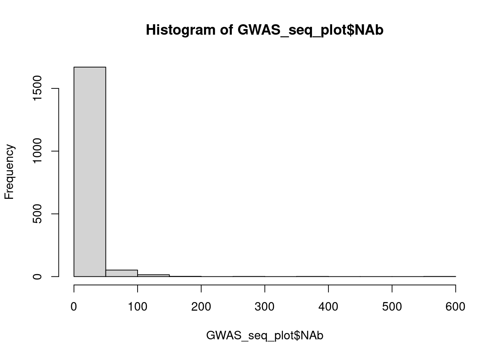
| Version | Author | Date |
|---|---|---|
| e0623f7 | shisusanna | 2022-01-25 |
write.csv(GWAS_seq_plot,"/home/shisusanna/data_process/data/GWAS_seq_plot.csv")GWAS_seq_plot <- read.csv("/home/shisusanna/data_process/data/GWAS_seq_plot.csv")
library("ggplot2")
library("ggpmisc")
library("ggsci")
library("gridExtra")
library("ggbeeswarm")
library("dplyr")ggplot(GWAS_seq_plot, aes( x =NAb))+
geom_histogram(aes(y = stat(density),)) +
geom_density(color = "#6baed6", size = 1)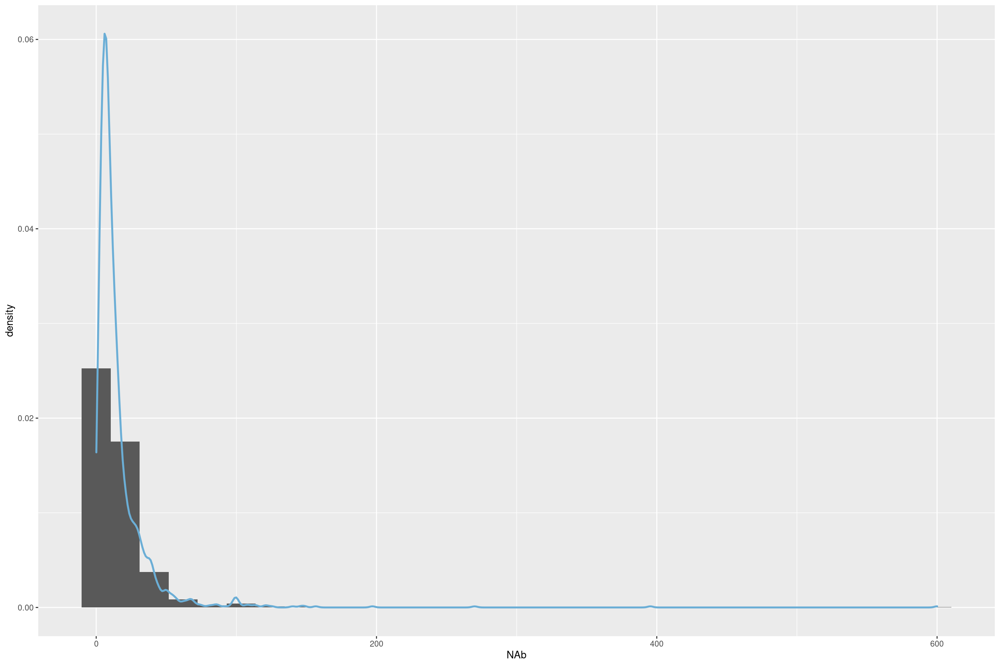
| Version | Author | Date |
|---|---|---|
| e0623f7 | shisusanna | 2022-01-25 |
ggplot(GWAS_seq_plot, aes( x =inter_dose, y = NAb ) )+
theme_minimal()+
geom_point(size = 2) +
geom_jitter(width = 0.5, height = 0.5)+
geom_point(shape=21,colour="black",fill="#FFCC33") +
geom_abline(intercept = log2(2), slope = 0, lty = 2,color ="#999999")+
stat_smooth(method = lm, formula = y~x,level = 0.95,color ="#663399")+
theme(text = element_text( color = "black",size = 20), plot.title = element_text(hjust = 0.5) )+
stat_poly_eq(aes(label=paste(..eq.label..,..adj.rr.label..,..p.value.label..,sep = "~~~~")),formula = y~x,parse=T,size=4)+
xlab("两剂间隔（天）")+
ggtitle("SARS-CoV-2 Neutralizing Antibody")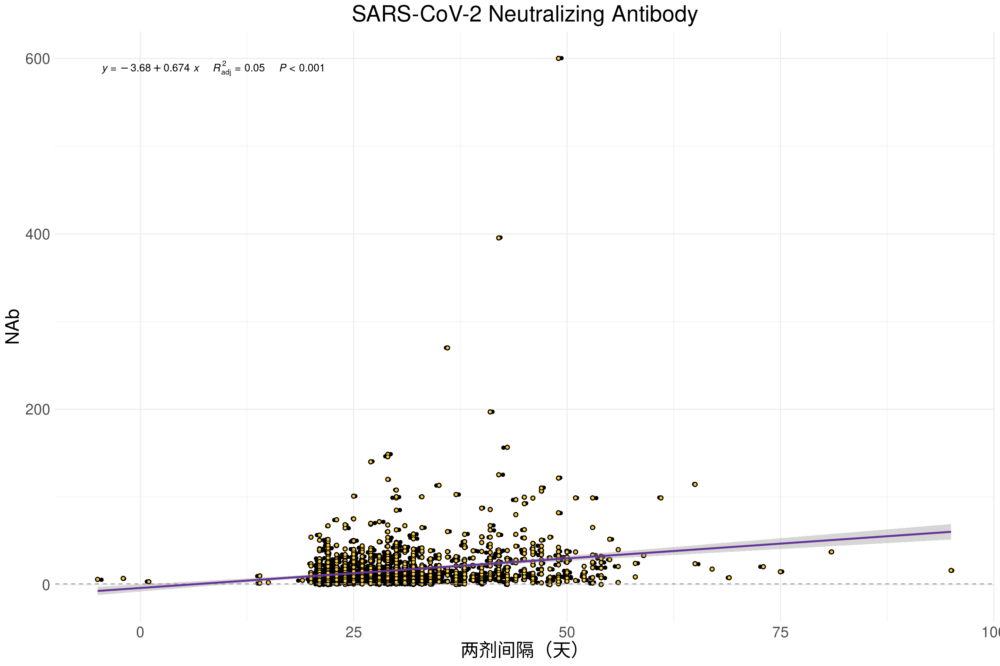
| Version | Author | Date |
|---|---|---|
| e0623f7 | shisusanna | 2022-01-25 |
install.packages("viridisLite")
library(viridis)
install.packagesfunction (pkgs, lib, repos = getOption("repos"), contriburl = contrib.url(repos,
type), method, available = NULL, destdir = NULL, dependencies = NA,
type = getOption("pkgType"), configure.args = getOption("configure.args"),
configure.vars = getOption("configure.vars"), clean = FALSE,
Ncpus = getOption("Ncpus", 1L), verbose = getOption("verbose"),
libs_only = FALSE, INSTALL_opts, quiet = FALSE, keep_outputs = FALSE,
...)
{
if (!is.character(type))
stop("invalid 'type'; must be a character string")
type2 <- .Platform$pkgType
if (type == "binary") {
if (type2 == "source")
stop("type 'binary' is not supported on this platform")
else type <- type2
if (type == "both" && (!missing(contriburl) || !is.null(available)))
stop("specifying 'contriburl' or 'available' requires a single type, not type = \"both\"")
}
if (is.logical(clean) && clean)
clean <- "--clean"
if (is.logical(dependencies) && is.na(dependencies))
dependencies <- if (!missing(lib) && length(lib) > 1L)
FALSE
else c("Depends", "Imports", "LinkingTo")
get_package_name <- function(pkg) {
gsub("_[.](zip|tar[.]gz|tar[.]bzip2|tar[.]xz)", "", gsub(.standard_regexps()$valid_package_version,
"", basename(pkg)))
}
getConfigureArgs <- function(pkg) {
if (.Platform$OS.type == "windows")
return(character())
if (length(pkgs) == 1L && length(configure.args) && length(names(configure.args)) ==
0L)
return(paste0("--configure-args=", shQuote(paste(configure.args,
collapse = " "))))
pkg <- get_package_name(pkg)
if (length(configure.args) && length(names(configure.args)) &&
pkg %in% names(configure.args))
config <- paste0("--configure-args=", shQuote(paste(configure.args[[pkg]],
collapse = " ")))
else config <- character()
config
}
getConfigureVars <- function(pkg) {
if (.Platform$OS.type == "windows")
return(character())
if (length(pkgs) == 1L && length(configure.vars) && length(names(configure.vars)) ==
0L)
return(paste0("--configure-vars=", shQuote(paste(configure.vars,
collapse = " "))))
pkg <- get_package_name(pkg)
if (length(configure.vars) && length(names(configure.vars)) &&
pkg %in% names(configure.vars))
config <- paste0("--configure-vars=", shQuote(paste(configure.vars[[pkg]],
collapse = " ")))
else config <- character()
config
}
get_install_opts <- function(pkg) {
if (!length(INSTALL_opts))
character()
else paste(INSTALL_opts[[get_package_name(pkg)]], collapse = " ")
}
if (missing(pkgs)) {
if (!interactive())
stop("no packages were specified")
if (.Platform$OS.type == "windows" || .Platform$GUI ==
"AQUA" || (capabilities("tcltk") && capabilities("X11") &&
suppressWarnings(tcltk::.TkUp))) {
}
else stop("no packages were specified")
if (is.null(available)) {
av <- available.packages(contriburl = contriburl,
method = method, ...)
if (missing(repos))
repos <- getOption("repos")
if (type != "both")
available <- av
}
else av <- available
if (NROW(av)) {
pkgs <- select.list(sort(unique(rownames(av))), multiple = TRUE,
title = "Packages", graphics = TRUE)
}
}
if (.Platform$OS.type == "windows" && length(pkgs)) {
pkgnames <- get_package_name(pkgs)
inuse <- search()
inuse <- sub("^package:", "", inuse[grep("^package:",
inuse)])
inuse <- pkgnames %in% inuse
if (any(inuse)) {
warning(sprintf(ngettext(sum(inuse), "package %s is in use and will not be installed",
"packages %s are in use and will not be installed"),
paste(sQuote(pkgnames[inuse]), collapse = ", ")),
call. = FALSE, domain = NA, immediate. = TRUE)
pkgs <- pkgs[!inuse]
}
}
if (!length(pkgs))
return(invisible())
if (missing(lib) || is.null(lib)) {
lib <- .libPaths()[1L]
if (!quiet && length(.libPaths()) > 1L)
message(sprintf(ngettext(length(pkgs), "Installing package into %s\n(as %s is unspecified)",
"Installing packages into %s\n(as %s is unspecified)"),
sQuote(lib), sQuote("lib")), domain = NA)
}
ok <- dir.exists(lib) & (file.access(lib, 2) == 0L)
if (length(lib) > 1 && any(!ok))
stop(sprintf(ngettext(sum(!ok), "'lib' element %s is not a writable directory",
"'lib' elements %s are not writable directories"),
paste(sQuote(lib[!ok]), collapse = ", ")), domain = NA)
if (length(lib) == 1L && .Platform$OS.type == "windows") {
ok <- dir.exists(lib)
if (ok) {
fn <- file.path(lib, paste0("_test_dir_", Sys.getpid()))
unlink(fn, recursive = TRUE)
res <- try(dir.create(fn, showWarnings = FALSE))
if (inherits(res, "try-error") || !res)
ok <- FALSE
else unlink(fn, recursive = TRUE)
}
}
if (length(lib) == 1L && !ok) {
warning(gettextf("'lib = \"%s\"' is not writable", lib),
domain = NA, immediate. = TRUE)
userdir <- unlist(strsplit(Sys.getenv("R_LIBS_USER"),
.Platform$path.sep))[1L]
if (interactive()) {
ans <- askYesNo(gettext("Would you like to use a personal library instead?"),
default = FALSE)
if (!isTRUE(ans))
stop("unable to install packages")
lib <- userdir
if (!file.exists(userdir)) {
ans <- askYesNo(gettextf("Would you like to create a personal library\n%s\nto install packages into?",
sQuote(userdir)), default = FALSE)
if (!isTRUE(ans))
stop("unable to install packages")
if (!dir.create(userdir, recursive = TRUE))
stop(gettextf("unable to create %s", sQuote(userdir)),
domain = NA)
.libPaths(c(userdir, .libPaths()))
}
}
else stop("unable to install packages")
}
lib <- normalizePath(lib)
if (length(pkgs) == 1L && missing(repos) && missing(contriburl)) {
if ((type == "source" && any(grepl("[.]tar[.](gz|bz2|xz)$",
pkgs))) || (type %in% "win.binary" && endsWith(pkgs,
".zip")) || (startsWith(type, "mac.binary") && endsWith(pkgs,
".tgz"))) {
repos <- NULL
message("inferring 'repos = NULL' from 'pkgs'")
}
if (type == "both") {
if (type2 %in% "win.binary" && endsWith(pkgs, ".zip")) {
repos <- NULL
type <- type2
message("inferring 'repos = NULL' from 'pkgs'")
}
else if (startsWith(type2, "mac.binary") && endsWith(pkgs,
".tgz")) {
repos <- NULL
type <- type2
message("inferring 'repos = NULL' from 'pkgs'")
}
else if (grepl("[.]tar[.](gz|bz2|xz)$", pkgs)) {
repos <- NULL
type <- "source"
message("inferring 'repos = NULL' from 'pkgs'")
}
}
}
if (length(pkgs) == 1L && is.null(repos) && type == "both") {
if ((type2 %in% "win.binary" && endsWith(pkgs, ".zip")) ||
(startsWith(type2, "mac.binary") && endsWith(pkgs,
".tgz"))) {
type <- type2
}
else if (grepl("[.]tar[.](gz|bz2|xz)$", pkgs)) {
type <- "source"
}
}
if (is.null(repos) && missing(contriburl)) {
tmpd <- destdir
nonlocalrepos <- any(web <- grepl("^(http|https|ftp)://",
pkgs))
if (is.null(destdir) && nonlocalrepos) {
tmpd <- file.path(tempdir(), "downloaded_packages")
if (!file.exists(tmpd) && !dir.create(tmpd))
stop(gettextf("unable to create temporary directory %s",
sQuote(tmpd)), domain = NA)
}
if (nonlocalrepos) {
df <- function(p, destfile, method, ...) download.file(p,
destfile, method, mode = "wb", ...)
urls <- pkgs[web]
for (p in unique(urls)) {
this <- pkgs == p
destfile <- file.path(tmpd, basename(p))
res <- try(df(p, destfile, method, ...))
if (!inherits(res, "try-error") && res == 0L)
pkgs[this] <- destfile
else {
pkgs[this] <- NA
}
}
}
}
if (type == "both") {
if (type2 == "source")
stop("type == \"both\" can only be used on Windows or a CRAN build for macOS")
if (!missing(contriburl) || !is.null(available))
type <- type2
}
getDeps <- TRUE
if (type == "both") {
if (is.null(repos))
stop("type == \"both\" cannot be used with 'repos = NULL'")
type <- "source"
contriburl <- contrib.url(repos, "source")
if (missing(repos))
repos <- getOption("repos")
available <- available.packages(contriburl = contriburl,
method = method, fields = "NeedsCompilation", ...)
pkgs <- getDependencies(pkgs, dependencies, available,
lib, ...)
getDeps <- FALSE
av2 <- available.packages(contriburl = contrib.url(repos,
type2), method = method, ...)
bins <- row.names(av2)
bins <- pkgs[pkgs %in% bins]
srcOnly <- pkgs[!pkgs %in% bins]
binvers <- av2[bins, "Version"]
hasArchs <- !is.na(av2[bins, "Archs"])
needsCmp <- !(available[bins, "NeedsCompilation"] %in%
"no")
hasSrc <- hasArchs | needsCmp
srcvers <- available[bins, "Version"]
later <- as.numeric_version(binvers) < srcvers
action <- getOption("install.packages.compile.from.source",
"interactive")
if (!nzchar(Sys.which(Sys.getenv("MAKE", "make"))))
action <- "never"
if (any(later)) {
msg <- ngettext(sum(later), "There is a binary version available but the source version is later",
"There are binary versions available but the source versions are later")
cat("\n", paste(strwrap(msg, indent = 2, exdent = 2),
collapse = "\n"), ":\n", sep = "")
out <- data.frame(binary = binvers, source = srcvers,
needs_compilation = hasSrc, row.names = bins,
check.names = FALSE)[later, ]
print(out)
cat("\n")
if (any(later & hasSrc)) {
if (action == "interactive" && interactive()) {
msg <- ngettext(sum(later & hasSrc), "Do you want to install from sources the package which needs compilation?",
"Do you want to install from sources the packages which need compilation?")
res <- askYesNo(msg)
if (is.na(res))
stop("Cancelled by user")
if (!isTRUE(res))
later <- later & !hasSrc
}
else if (action == "never") {
cat(" Binaries will be installed\n")
later <- later & !hasSrc
}
}
}
bins <- bins[!later]
if (length(srcOnly)) {
s2 <- srcOnly[!(available[srcOnly, "NeedsCompilation"] %in%
"no")]
if (length(s2)) {
msg <- ngettext(length(s2), "Package which is only available in source form, and may need compilation of C/C++/Fortran",
"Packages which are only available in source form, and may need compilation of C/C++/Fortran")
msg <- c(paste0(msg, ": "), sQuote(s2))
msg <- strwrap(paste(msg, collapse = " "), exdent = 2)
message(paste(msg, collapse = "\n"), domain = NA)
if (action == "interactive" && interactive()) {
res <- askYesNo("Do you want to attempt to install these from sources?")
if (is.na(res))
stop("Cancelled by user")
if (!isTRUE(res))
pkgs <- setdiff(pkgs, s2)
}
else if (action == "never") {
cat(" These will not be installed\n")
pkgs <- setdiff(pkgs, s2)
}
}
}
if (length(bins)) {
if (type2 == "win.binary")
.install.winbinary(pkgs = bins, lib = lib, contriburl = contrib.url(repos,
type2), method = method, available = av2, destdir = destdir,
dependencies = NULL, libs_only = libs_only,
quiet = quiet, ...)
else .install.macbinary(pkgs = bins, lib = lib, contriburl = contrib.url(repos,
type2), method = method, available = av2, destdir = destdir,
dependencies = NULL, quiet = quiet, ...)
}
pkgs <- setdiff(pkgs, bins)
if (!length(pkgs))
return(invisible())
message(sprintf(ngettext(length(pkgs), "installing the source package %s",
"installing the source packages %s"), paste(sQuote(pkgs),
collapse = ", ")), "\n", domain = NA)
flush.console()
}
else if (getOption("install.packages.check.source", "yes") %in%
"yes" && (type %in% "win.binary" || startsWith(type,
"mac.binary"))) {
if (missing(contriburl) && is.null(available) && !is.null(repos)) {
contriburl2 <- contrib.url(repos, "source")
if (missing(repos))
repos <- getOption("repos")
av1 <- tryCatch(suppressWarnings(available.packages(contriburl = contriburl2,
method = method, ...)), error = function(e) e)
if (inherits(av1, "error")) {
message("source repository is unavailable to check versions")
available <- available.packages(contriburl = contrib.url(repos,
type), method = method, ...)
}
else {
srcpkgs <- pkgs[pkgs %in% row.names(av1)]
available <- available.packages(contriburl = contrib.url(repos,
type), method = method, ...)
bins <- pkgs[pkgs %in% row.names(available)]
na <- srcpkgs[!srcpkgs %in% bins]
if (length(na)) {
msg <- sprintf(ngettext(length(na), "package %s is available as a source package but not as a binary",
"packages %s are available as source packages but not as binaries"),
paste(sQuote(na), collapse = ", "))
cat("\n ", msg, "\n\n", sep = "")
}
binvers <- available[bins, "Version"]
srcvers <- binvers
OK <- bins %in% srcpkgs
srcvers[OK] <- av1[bins[OK], "Version"]
later <- as.numeric_version(binvers) < srcvers
if (any(later)) {
msg <- ngettext(sum(later), "There is a binary version available (and will be installed) but the source version is later",
"There are binary versions available (and will be installed) but the source versions are later")
cat("\n", paste(strwrap(msg, indent = 2, exdent = 2),
collapse = "\n"), ":\n", sep = "")
print(data.frame(binary = binvers, source = srcvers,
row.names = bins, check.names = FALSE)[later,
])
cat("\n")
}
}
}
}
if (.Platform$OS.type == "windows") {
if (startsWith(type, "mac.binary"))
stop("cannot install macOS binary packages on Windows")
if (type %in% "win.binary") {
.install.winbinary(pkgs = pkgs, lib = lib, contriburl = contriburl,
method = method, available = available, destdir = destdir,
dependencies = dependencies, libs_only = libs_only,
quiet = quiet, ...)
return(invisible())
}
have_spaces <- grep(" ", pkgs)
if (length(have_spaces)) {
p <- pkgs[have_spaces]
dirs <- shortPathName(dirname(p))
pkgs[have_spaces] <- file.path(dirs, basename(p))
}
pkgs <- gsub("\\", "/", pkgs, fixed = TRUE)
}
else {
if (startsWith(type, "mac.binary")) {
if (!grepl("darwin", R.version$platform))
stop("cannot install macOS binary packages on this platform")
.install.macbinary(pkgs = pkgs, lib = lib, contriburl = contriburl,
method = method, available = available, destdir = destdir,
dependencies = dependencies, quiet = quiet, ...)
return(invisible())
}
if (type %in% "win.binary")
stop("cannot install Windows binary packages on this platform")
if (!file.exists(file.path(R.home("bin"), "INSTALL")))
stop("This version of R is not set up to install source packages\nIf it was installed from an RPM, you may need the R-devel RPM")
}
cmd0 <- file.path(R.home("bin"), "R")
args0 <- c("CMD", "INSTALL")
output <- if (quiet)
FALSE
else ""
env <- character()
tlim <- Sys.getenv("_R_INSTALL_PACKAGES_ELAPSED_TIMEOUT_")
tlim <- if (is.na(tlim))
0
else tools:::get_timeout(tlim)
outdir <- getwd()
if (is.logical(keep_outputs)) {
if (is.na(keep_outputs))
keep_outputs <- FALSE
}
else if (is.character(keep_outputs) && (length(keep_outputs) ==
1L)) {
if (!dir.exists(keep_outputs) && !dir.create(keep_outputs,
recursive = TRUE))
stop(gettextf("unable to create %s", sQuote(keep_outputs)),
domain = NA)
outdir <- normalizePath(keep_outputs)
keep_outputs <- TRUE
}
else stop(gettextf("invalid %s argument", sQuote("keep_outputs")),
domain = NA)
if (length(libpath <- .R_LIBS())) {
if (.Platform$OS.type == "windows") {
oldrlibs <- Sys.getenv("R_LIBS")
Sys.setenv(R_LIBS = libpath)
on.exit(Sys.setenv(R_LIBS = oldrlibs))
}
else env <- paste0("R_LIBS=", shQuote(libpath))
}
if (is.character(clean))
args0 <- c(args0, clean)
if (libs_only)
args0 <- c(args0, "--libs-only")
if (!missing(INSTALL_opts)) {
if (!is.list(INSTALL_opts)) {
args0 <- c(args0, paste(INSTALL_opts, collapse = " "))
INSTALL_opts <- list()
}
}
else {
INSTALL_opts <- list()
}
if (verbose)
message(gettextf("system (cmd0): %s", paste(c(cmd0, args0),
collapse = " ")), domain = NA)
if (is.null(repos) && missing(contriburl)) {
update <- cbind(path.expand(pkgs), lib)
for (i in seq_len(nrow(update))) {
if (is.na(update[i, 1L]))
next
args <- c(args0, get_install_opts(update[i, 1L]),
"-l", shQuote(update[i, 2L]), getConfigureArgs(update[i,
1L]), getConfigureVars(update[i, 1L]), shQuote(update[i,
1L]))
status <- system2(cmd0, args, env = env, stdout = output,
stderr = output, timeout = tlim)
if (status > 0L)
warning(gettextf("installation of package %s had non-zero exit status",
sQuote(update[i, 1L])), domain = NA)
else if (verbose) {
cmd <- paste(c(cmd0, args), collapse = " ")
message(sprintf("%d): succeeded '%s'", i, cmd),
domain = NA)
}
}
return(invisible())
}
tmpd <- destdir
nonlocalrepos <- !all(startsWith(contriburl, "file:"))
if (is.null(destdir) && nonlocalrepos) {
tmpd <- file.path(tempdir(), "downloaded_packages")
if (!file.exists(tmpd) && !dir.create(tmpd))
stop(gettextf("unable to create temporary directory %s",
sQuote(tmpd)), domain = NA)
}
av2 <- NULL
if (is.null(available)) {
filters <- getOption("available_packages_filters")
if (!is.null(filters)) {
available <- available.packages(contriburl = contriburl,
method = method, ...)
}
else {
f <- setdiff(available_packages_filters_default,
c("R_version", "duplicates"))
av2 <- available.packages(contriburl = contriburl,
filters = f, method = method, ...)
f <- available_packages_filters_db[["R_version"]]
f2 <- available_packages_filters_db[["duplicates"]]
available <- f2(f(av2))
}
}
if (getDeps)
pkgs <- getDependencies(pkgs, dependencies, available,
lib, ..., av2 = av2)
foundpkgs <- download.packages(pkgs, destdir = tmpd, available = available,
contriburl = contriburl, method = method, type = "source",
quiet = quiet, ...)
if (length(foundpkgs)) {
if (verbose)
message(gettextf("foundpkgs: %s", paste(foundpkgs,
collapse = ", ")), domain = NA)
update <- unique(cbind(pkgs, lib))
colnames(update) <- c("Package", "LibPath")
found <- pkgs %in% foundpkgs[, 1L]
files <- foundpkgs[match(pkgs[found], foundpkgs[, 1L]),
2L]
if (verbose)
message(gettextf("files: %s", paste(files, collapse = ", \n\t")),
domain = NA)
update <- cbind(update[found, , drop = FALSE], file = files)
if (nrow(update) > 1L) {
upkgs <- unique(pkgs <- update[, 1L])
DL <- .make_dependency_list(upkgs, available)
p0 <- .find_install_order(upkgs, DL)
update <- update[sort.list(match(pkgs, p0)), ]
}
if (Ncpus > 1L && nrow(update) > 1L) {
tlim_cmd <- character()
if (tlim > 0) {
if (nzchar(timeout <- Sys.which("timeout"))) {
tlim_cmd <- c(shQuote(timeout), "--signal=INT",
tlim)
}
else warning("timeouts for parallel installs require the 'timeout' command")
}
args0 <- c(args0, "--pkglock")
tmpd2 <- file.path(tempdir(), "make_packages")
if (!file.exists(tmpd2) && !dir.create(tmpd2))
stop(gettextf("unable to create temporary directory %s",
sQuote(tmpd2)), domain = NA)
mfile <- file.path(tmpd2, "Makefile")
conn <- file(mfile, "wt")
deps <- paste(paste0(update[, 1L], ".ts"), collapse = " ")
deps <- strwrap(deps, width = 75, exdent = 2)
deps <- paste(deps, collapse = " \\\n")
cat("all: ", deps, "\n", sep = "", file = conn)
aDL <- .make_dependency_list(upkgs, available, recursive = TRUE)
for (i in seq_len(nrow(update))) {
pkg <- update[i, 1L]
fil <- update[i, 3L]
args <- c(args0, get_install_opts(fil), "-l",
shQuote(update[i, 2L]), getConfigureArgs(fil),
getConfigureVars(fil), shQuote(fil), ">", paste0(pkg,
".out"), "2>&1")
cmd <- paste(c("MAKEFLAGS=", tlim_cmd, shQuote(cmd0),
args), collapse = " ")
deps <- aDL[[pkg]]
deps <- deps[deps %in% upkgs]
deps <- if (length(deps))
paste(paste0(deps, ".ts"), collapse = " ")
else ""
cat(paste0(pkg, ".ts: ", deps), paste("\t@echo begin installing package",
sQuote(pkg)), paste0("\t@", cmd, " && touch ",
pkg, ".ts"), paste0("\t@cat ", pkg, ".out"),
"", sep = "\n", file = conn)
}
close(conn)
cwd <- setwd(tmpd2)
on.exit(setwd(cwd))
status <- system2(Sys.getenv("MAKE", "make"), c("-k -j",
Ncpus), stdout = output, stderr = output, env = env)
if (status > 0L) {
pkgs <- update[, 1L]
tss <- sub("[.]ts$", "", dir(".", pattern = "[.]ts$"))
failed <- pkgs[!pkgs %in% tss]
for (pkg in failed) system(paste0("cat ", pkg,
".out"))
warning(gettextf("installation of one or more packages failed,\n probably %s",
paste(sQuote(failed), collapse = ", ")), domain = NA)
}
if (keep_outputs)
file.copy(paste0(update[, 1L], ".out"), outdir)
file.copy(Sys.glob(paste0(update[, 1L], "*.zip")),
cwd)
file.copy(Sys.glob(paste0(update[, 1L], "*.tgz")),
cwd)
file.copy(Sys.glob(paste0(update[, 1L], "*.tar.gz")),
cwd)
setwd(cwd)
on.exit()
unlink(tmpd2, recursive = TRUE)
}
else {
tmpd2 <- tempfile()
if (!dir.create(tmpd2))
stop(gettextf("unable to create temporary directory %s",
sQuote(tmpd2)), domain = NA)
outfiles <- file.path(tmpd2, paste0(update[, 1L],
".out"))
for (i in seq_len(nrow(update))) {
outfile <- if (keep_outputs)
outfiles[i]
else output
fil <- update[i, 3L]
args <- c(args0, get_install_opts(fil), "-l",
shQuote(update[i, 2L]), getConfigureArgs(fil),
getConfigureVars(fil), shQuote(fil))
status <- system2(cmd0, args, env = env, stdout = outfile,
stderr = outfile, timeout = tlim)
if (!quiet && keep_outputs)
writeLines(readLines(outfile))
if (status > 0L)
warning(gettextf("installation of package %s had non-zero exit status",
sQuote(update[i, 1L])), domain = NA)
else if (verbose) {
cmd <- paste(c(cmd0, args), collapse = " ")
message(sprintf("%d): succeeded '%s'", i, cmd),
domain = NA)
}
}
if (keep_outputs)
file.copy(outfiles, outdir)
unlink(tmpd2, recursive = TRUE)
}
if (!quiet && nonlocalrepos && !is.null(tmpd) && is.null(destdir))
cat("\n", gettextf("The downloaded source packages are in\n\t%s",
sQuote(normalizePath(tmpd, mustWork = FALSE))),
"\n", sep = "", file = stderr())
libs_used <- unique(update[, 2L])
if (.Platform$OS.type == "unix" && .Library %in% libs_used) {
message("Updating HTML index of packages in '.Library'")
make.packages.html(.Library)
}
}
else if (!is.null(tmpd) && is.null(destdir))
unlink(tmpd, TRUE)
invisible()
}
<bytecode: 0x5582a78a7f10>
<environment: namespace:utils>library(ggpointdensity)
library("ggpubr")
ggplot(GWAS_seq_plot, mapping = aes(x =inter_dose, y = log2(NAb))) +
geom_pointdensity() +
scale_color_viridis(option = "C") +
theme_classic()+
stat_smooth(method = lm, formula = y~x,color = "#756bb1", fill = "#cbc9e2")+
stat_poly_eq(aes(label=paste(..eq.label..,..adj.rr.label..,..p.value.label..,sep = "~~~~")),formula = y~x,parse=T,size=4,label.y = "bottom", label.x = "right")+
stat_cor(label.y=7.5,label.x=24,size=4)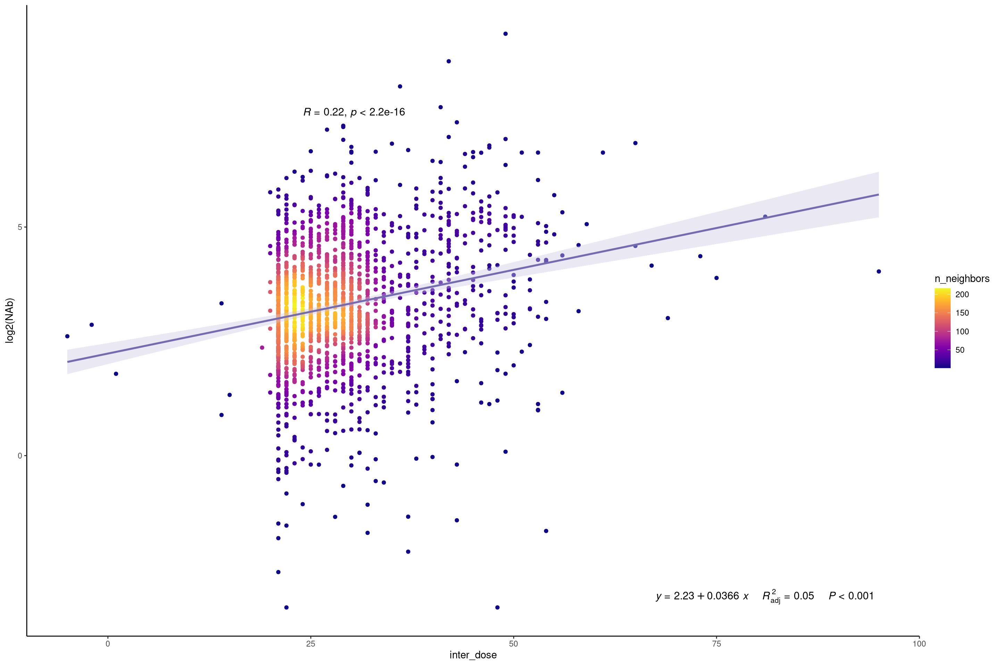
| Version | Author | Date |
|---|---|---|
| e0623f7 | shisusanna | 2022-01-25 |
library("ggpubr")
GWAS_seq_plot$NAbpass <- factor(GWAS_seq_plot$NAbpass,levels = c("Negative","Positive"))
table(GWAS_seq_plot$NAbpass)
Negative Positive
82 1660 ggplot(GWAS_seq_plot, aes( x =inter_time, y = NAb ) )+
geom_point(size = 3, aes(fill =NAbpass),color = "black",pch=21) +
geom_jitter(size = 3, aes(fill =NAbpass),color = "black",pch=21)+
scale_fill_aaas()+
theme_minimal()+
stat_smooth(method = lm, formula = y~x,color = "#003366",size=0.8)+
theme(text = element_text( color = "black",size = 20), plot.title = element_text(hjust = 0.5) )+
stat_poly_eq(aes(label=..eq.label..),formula = y~x,parse=T,size=4)+
stat_cor(label.y=144,label.x=23,size=4)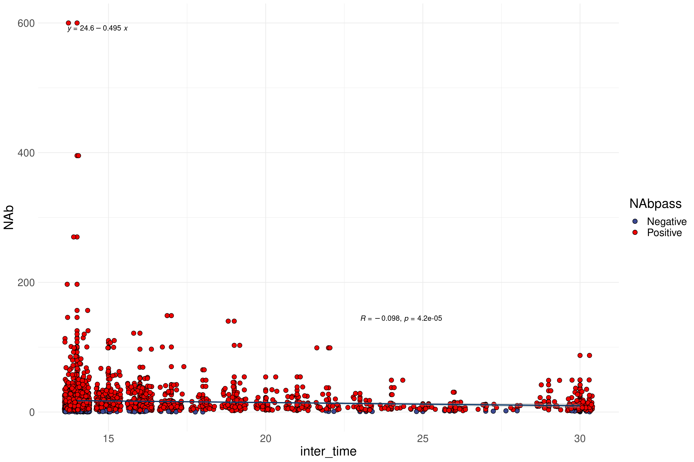
| Version | Author | Date |
|---|---|---|
| e0623f7 | shisusanna | 2022-01-25 |
cor=round(cor(GWAS_seq_plot$inter_time,GWAS_seq_plot$NAb),2)
ggplot(GWAS_seq_plot, aes( x =inter_time, y = log2(NAb) ) )+
geom_point(position = position_jitter(width = 0.5, height = 0.06),size = 2) +
theme_minimal()+
geom_quasirandom(position = "quasirandom")+
stat_smooth(method = lm, formula = y~x)+
xlab("Days since 2rd dose")+
ggtitle("SARS-CoV-2 Neutralizing Antibody")+
theme(text = element_text( color = "black",size = 20), plot.title = element_text(hjust = 0.5) )+
stat_poly_eq(aes(label=paste("italic(r)~`=`~",cor,sep = "")),formula = y~x,parse=T,size=5,label.x = "right",label.y = "top")+
stat_fit_glance(method = "lm", method.args = list(formula = y~x),label.x = "right",label.y = 0.02,aes(label = paste("italic(P)*\"-value = \"*",signif(..p.value.., digits = 2), sep = "")), size = 5,parse = TRUE)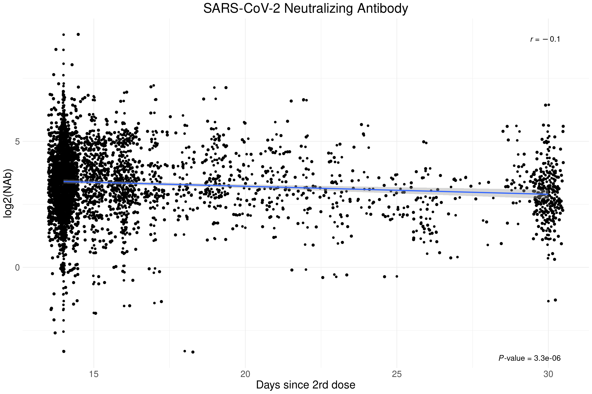
| Version | Author | Date |
|---|---|---|
| e0623f7 | shisusanna | 2022-01-25 |
ggplot(GWAS_seq_plot, aes( x =age, y = NAb ) )+
geom_point(size = 3, aes(fill =NAbpass),color = "black",pch=21) +
geom_jitter(size = 3, aes(fill =NAbpass),color = "black",pch=21)+
scale_fill_aaas()+
theme_minimal()+
stat_smooth(method = lm, formula = y~x,color = "#003366",size=0.8)+
theme(text = element_text( color = "black",size = 20), plot.title = element_text(hjust = 0.5) )+
stat_poly_eq(aes(label=..eq.label..),formula = y~x,parse=T,size=3)+
stat_cor(label.y=145,label.x=50,size=3)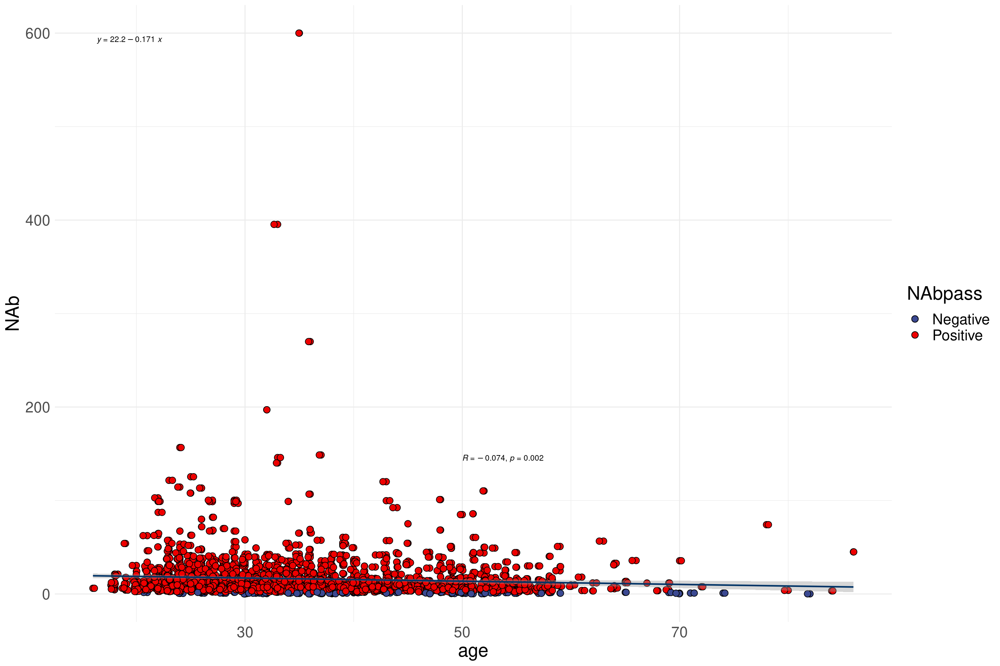
| Version | Author | Date |
|---|---|---|
| e0623f7 | shisusanna | 2022-01-25 |
colnames(GWAS_seq_plot) [1] "X.1" "X" "unique_num" "tele_num" "name"
[6] "ethnicity" "sex" "age" "height" "weight"
[11] "BMI" "IgG" "IgM" "NAb" "F_enterprise"
[16] "S_enterprise" "F_time" "S_time" "incept_time" "inter_time"
[21] "inter_dose" "NAbpass" "agec" "Vaccines" ggplot(GWAS_seq_plot, aes( x =BMI, y = log2(NAb) ) )+
geom_point(size = 3, aes(fill =NAbpass),color = "black",pch=21) +
geom_jitter(size = 3, aes(fill =NAbpass),color = "black",pch=21)+
scale_fill_aaas()+
theme_minimal()+
stat_smooth(method = lm, formula = y~x,color = "#003366",size=0.8)+
theme(text = element_text( color = "black",size = 20), plot.title = element_text(hjust = 0.5) )+
stat_poly_eq(aes(label = paste(..rr.label..)), formula = y~x, parse = TRUE, size = 3)+
stat_cor(label.y=6.5,label.x=35,size=3)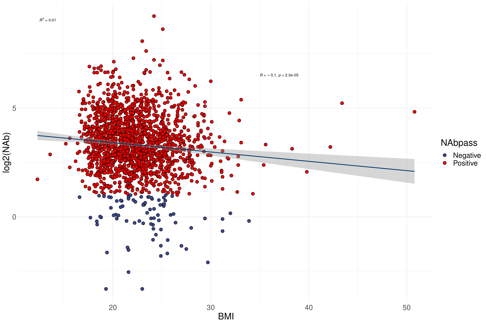
| Version | Author | Date |
|---|---|---|
| e0623f7 | shisusanna | 2022-01-25 |
ggplot(GWAS_seq_plot, aes( x =BMI, y = log2(NAb) ) )+
geom_point(size = 3, aes(fill =NAbpass),color = "black",pch=21) +
geom_jitter(size = 3, aes(fill =NAbpass),color = "black",pch=21)+
scale_fill_aaas()+
theme_minimal()+
stat_smooth(method = lm, formula = y~x,color = "#003366",size=0.8)+
theme(text = element_text( color = "black",size = 20), plot.title = element_text(hjust = 0.5) )+
stat_poly_eq(aes(label = paste(..rr.label..)), formula = y~x, parse = TRUE, size = 3)+
stat_cor(label.y=6.5,label.x=35,size=3)+
facet_grid(vars(agec),vars(sex))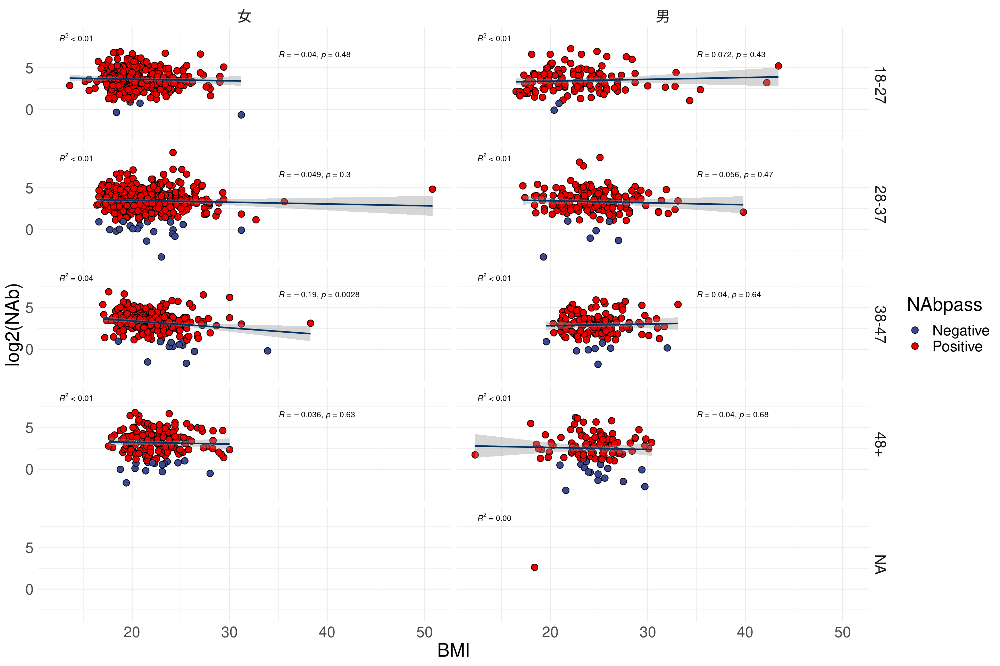
| Version | Author | Date |
|---|---|---|
| e0623f7 | shisusanna | 2022-01-25 |
colnames(GWAS_seq_plot) [1] "X.1" "X" "unique_num" "tele_num" "name"
[6] "ethnicity" "sex" "age" "height" "weight"
[11] "BMI" "IgG" "IgM" "NAb" "F_enterprise"
[16] "S_enterprise" "F_time" "S_time" "incept_time" "inter_time"
[21] "inter_dose" "NAbpass" "agec" "Vaccines" ggplot(GWAS_seq_plot, aes( x =weight, y = log2(NAb) ) )+
geom_point(size = 3, aes(fill =NAbpass),color = "black",pch=21) +
geom_jitter(size = 3, aes(fill =NAbpass),color = "black",pch=21)+
scale_fill_aaas()+
theme_minimal()+
stat_smooth(method = lm, formula = y~x,color = "#003366",size=0.8)+
theme(text = element_text( color = "black",size = 20), plot.title = element_text(hjust = 0.5) )+
stat_poly_eq(aes(label = paste(..rr.label..)), formula = y~x, parse = TRUE, size = 3)+
stat_cor(label.y=7,label.x=88,size=3)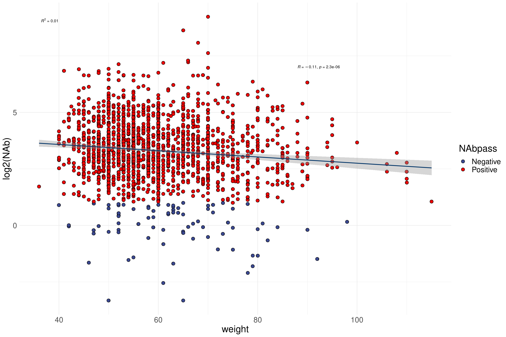
| Version | Author | Date |
|---|---|---|
| e0623f7 | shisusanna | 2022-01-25 |
ggplot(GWAS_seq_plot, aes( x =weight, y = log2(NAb) ) )+
geom_point(size = 3, aes(fill =NAbpass),color = "black",pch=21) +
geom_jitter(size = 3, aes(fill =NAbpass),color = "black",pch=21)+
scale_fill_aaas()+
theme_minimal()+
stat_smooth(method = lm, formula = y~x,color = "#003366",size=0.8)+
theme(text = element_text( color = "black",size = 20), plot.title = element_text(hjust = 0.5) )+
stat_poly_eq(aes(label = paste(..rr.label..)), formula = y~x, parse = TRUE, size = 3)+
facet_grid(vars(agec),vars(sex))+
stat_cor(label.y=7,label.x=88,size=3)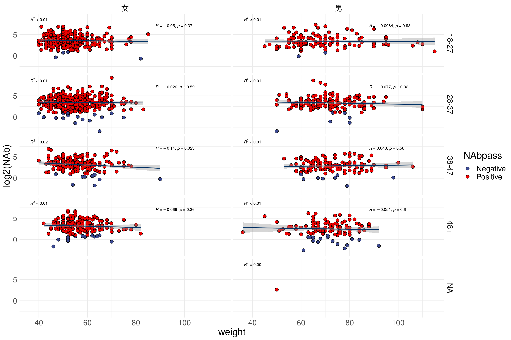
| Version | Author | Date |
|---|---|---|
| e0623f7 | shisusanna | 2022-01-25 |
GWAS_seq_plot1 <- GWAS_seq_plot[-which(is.na(GWAS_seq_plot$Vaccines)),]
ggplot(GWAS_seq_plot1, aes( x =Vaccines, y = log2(NAb) ) )+
geom_boxplot(aes(group = Vaccines),size=2,alpha=0.8)+
geom_point(size =2, aes(fill =NAbpass),color = "black",pch=21) +
geom_jitter(size =2, aes(fill =NAbpass),color = "black",pch=21)+
scale_fill_aaas()+
theme_minimal()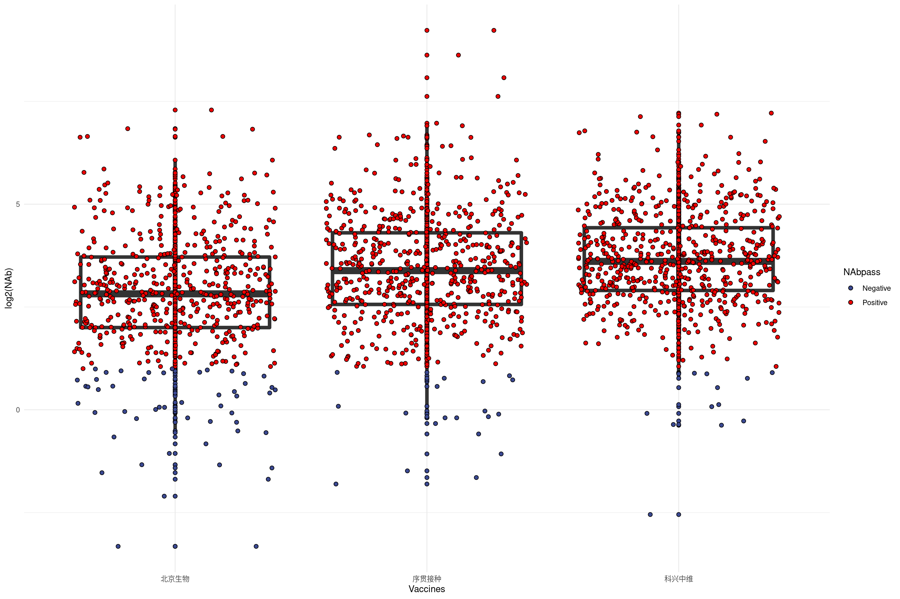
| Version | Author | Date |
|---|---|---|
| e0623f7 | shisusanna | 2022-01-25 |
sessionInfo()R version 4.1.1 (2021-08-10)
Platform: x86_64-pc-linux-gnu (64-bit)
Running under: Ubuntu 20.04.3 LTS
Matrix products: default
BLAS: /usr/lib/x86_64-linux-gnu/blas/libblas.so.3.9.0
LAPACK: /usr/lib/x86_64-linux-gnu/lapack/liblapack.so.3.9.0
locale:
[1] LC_CTYPE=en_US.UTF-8 LC_NUMERIC=C
[3] LC_TIME=en_US.UTF-8 LC_COLLATE=en_US.UTF-8
[5] LC_MONETARY=en_US.UTF-8 LC_MESSAGES=en_US.UTF-8
[7] LC_PAPER=en_US.UTF-8 LC_NAME=C
[9] LC_ADDRESS=C LC_TELEPHONE=C
[11] LC_MEASUREMENT=en_US.UTF-8 LC_IDENTIFICATION=C
attached base packages:
[1] stats graphics grDevices utils datasets methods base
other attached packages:
[1] ggpubr_0.4.0 ggpointdensity_0.1.0 viridis_0.6.1
[4] viridisLite_0.4.0 ggbeeswarm_0.6.0 gridExtra_2.3
[7] ggsci_2.9 ggpmisc_0.4.3 ggpp_0.4.2
[10] ggplot2_3.3.5 tidyfst_1.5.0 dplyr_1.0.7
[13] workflowr_1.7.0
loaded via a namespace (and not attached):
[1] nlme_3.1-153 matrixStats_0.60.0 fs_1.5.0 httr_1.4.2
[5] rprojroot_2.0.2 tools_4.1.1 backports_1.2.1 bslib_0.3.1
[9] utf8_1.2.2 R6_2.5.1 vipor_0.4.5 DBI_1.1.1
[13] mgcv_1.8-38 colorspace_2.0-2 withr_2.4.2 tidyselect_1.1.1
[17] processx_3.5.2 curl_4.3.2 compiler_4.1.1 git2r_0.28.0
[21] cli_3.0.1 quantreg_5.86 SparseM_1.81 labeling_0.4.2
[25] sass_0.4.0 scales_1.1.1 callr_3.7.0 stringr_1.4.0
[29] digest_0.6.28 foreign_0.8-81 rmarkdown_2.11.3 rio_0.5.27
[33] pkgconfig_2.0.3 htmltools_0.5.2 fst_0.9.4 fastmap_1.1.0
[37] highr_0.9 readxl_1.3.1 rlang_0.4.11 rstudioapi_0.13
[41] jquerylib_0.1.4 farver_2.1.0 generics_0.1.0 jsonlite_1.7.2
[45] zip_2.2.0 car_3.0-11 magrittr_2.0.1 polynom_1.4-0
[49] Matrix_1.3-4 Rcpp_1.0.7 munsell_0.5.0 fansi_0.5.0
[53] abind_1.4-5 lifecycle_1.0.0 stringi_1.7.5 whisker_0.4
[57] yaml_2.2.1 carData_3.0-4 grid_4.1.1 parallel_4.1.1
[61] promises_1.2.0.1 forcats_0.5.1 crayon_1.4.1 lattice_0.20-44
[65] haven_2.4.3 splines_4.1.1 hms_1.1.0 knitr_1.36
[69] ps_1.6.0 pillar_1.6.2 ggsignif_0.6.2 glue_1.4.2
[73] evaluate_0.14 getPass_0.2-2 data.table_1.14.0 vctrs_0.3.8
[77] httpuv_1.6.1 cellranger_1.1.0 MatrixModels_0.5-0 gtable_0.3.0
[81] purrr_0.3.4 tidyr_1.1.3 assertthat_0.2.1 openxlsx_4.2.4
[85] xfun_0.26 broom_0.7.9 rstatix_0.7.0 later_1.2.0
[89] tibble_3.1.3 conquer_1.0.2 beeswarm_0.4.0 ellipsis_0.3.2